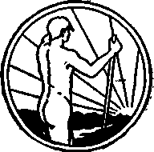
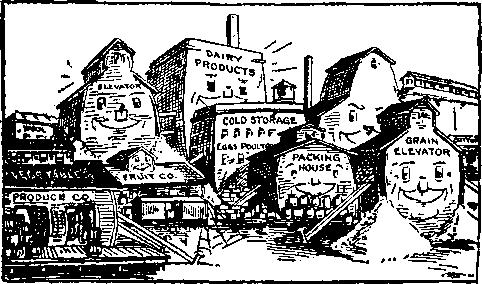
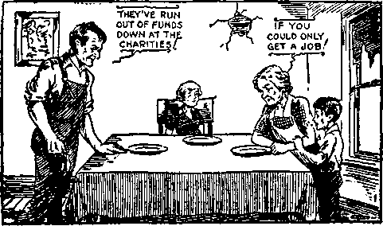

A JOURNAL OF FACT HOPE AND COURAGE
iiiiiiiiiiiiiiiiiiiiiiiiiiiiiiiiiiiiiiiiiiiiiiiiiiiiiiiiimiiiiiiiiiin
GRAVITATION
AND ELECTRIC ENERGY
"JAPAN’S UNDECLARED WAR”
THINKLETS AND INKLETS
CHILD TRAINING
JIG TIME SALADS
JEHOVAH TEACHES HIS PEOPLE
CRAVING FOR PROSPERITY
iiiiiiiiiiiiiiiiiiiiiiiiiiiiiiiiiiiiiiiiiiiiiiniiiiiiiiiiiiiiiiiiiiiiiii
every other WEDNESDAY
five cents a copy one dollar a year Canada & Foreign 1.25
Vol. XIII - No. 337
August 17, 1932
CONTENTS
LABOR AND ECONOMICS
WlIAT IS ON THE DOORSTEP . . .713
Why Needy Are Helped . . .728
SOCIAL AND EDUCATIONAL
Nice Note from Chicago . . . 714
Thinklf.ts and Inklets . . . 715
Smallest Book in the World . 715
Music of Spheres a Reality . .716
Effect of Kreuger Suicide . . 716
James F. Greene at Geneva . . 717
Have You Been to College? . 718
Child Training ......721
Icicle 230 Feet Long .... 735
MANUFACTURING AND MINING
Loveland Forges Ahead . . . 715
2e Electric Rate in Virginia. Minn. 717
FINANCE—COMMERCE—TRANSPORTATION
Rail Cheaper than Autos . . 715
Decline in Bank Clearings . . 715
Across Roof of the World . . 715
Why Variant Interest Rates? . 719
Railroad Travel Century Ago . 719
Airplane Travel Around South America.....734
POLITICAL—DOMESTIC AND FOREIGN
“Japan’s Undeclared War”
The Kaiser’s Coolies .
Hysteria in the Senate Too Late with Ventilators
. 711
. 712
. 717
. 718
Socialist Republic in Chile , . 719
Political Free Lunch Counter . 720
AGRICULTURE AND HUSBANDRY
Starving the Wrong Horse . .714
.Singular Habits of Salmon . . 714
Individualsm on Farm Must Go . 715 Raising Grapefruit in
Rio Grande Valley . . . .715
French Peasant on Own Land . 720
Why Chickens Did Not Grow . 723
SCIENCE AND INVENTION
Gravitation and Electric Energy 707
Tubeless Radio Coming . . .710
Detachable Electric Periscope . 713
Second Reinmuth Planet . . . 716
HOME AND HEALTH
Harry Newburg Cut His Finger 717 Government by Federal Trade
RELIGION AND PHILOSOPHY
Lied Deliberately at Every Mass 718
Glorifies Man. Belittles (v d . . 719
Jehovah the Teacher of
His People ......724
Saintokowski Blazejowski
Ouciiokovvski ! .....728
Craving for Prosperity . . . 729
Published every other Wednesday at 117 Adams Street, Brooklyn, N. Y., V. S. A , by WOODWORTH, KNORR & MARTIN
Coyaitncrs and Propi ictors Address: 117 Adams Sheet, Brooklyn, -V. 1’., U. S. .4. CLAYTON J. WOODWORTH . . Editor ROBERT J. MARTIN.. Business Manager NATHAN H. KNORR . . Secretary and Treasurer
Cems a Copy—$1.00 a Yeah Make Remittances to THU GULDEN AGE Notice to Subscnbers: For your own safety, remit by postal or express money order. We do not, as a rule, send acknowledgment of a renewal or a new subscription. Renewal blank (carrying notice of expiration) is sent with the journal one month before tile subscription expires. Change of address, when requested, may bo expected to appear on address label within one month.
Published aFo in Esperanto, Finnish, German, Japanese, Norwegian, Polish, Swedish.
. Offices in Other Countries
Btitish ......... ... 34 Craven Terrace. London, W. 2, England
Canadian ..........40 Irwin Avenue, Toronto 5. Ontario, Canada
Australasian ...... 7 Beresford Rd., Strathfleld, N. S. W., Australia
South African..........6 Lelie Street, Cape Town, Siuth Africa
Entered as second-class matter at Brooklyn, N. Y\, under the Act of March 3, 1S79.
Volume XIII Brooklyn, N. Y., Wednesday, August 17, 1932 Number 337
Gravitation and Electric Energy By c. e. stewart
THE subject of gravitation is a very interesting one, especially as it relates to attraction between heavenly bodies. '‘Attraction of Gravitation Not Universal” {Golden Age, No. 314) seems to be well and truthfully thought out. Therefore, Newton’s “universal law of gravitation”, that “every particle of matter in the universe attracts every other particle with a force proportional to the product of their masses and inversely as the squares of their distance apart", is not true. The variableness of the planets in their orbits proves that the “constant attractive force”, necessitated by the. universal gravitation theory, is based upon a false premise.
It is said that an atom is composed of one proton and its many or few electrons, depending upon the substance, whether gold, silver, lead, wood, or glass; gold atoms containing many electrons, and wood only a few. The proton is the positive element; the electrons are the negative element. It is claimed that a proton weighs 2,000 times as much as an electron.
An atom is a miniature solar system: the proton is the “sun”, and the electrons are the worlds or “planets” whirling and zigzagging at terrific speed, each in an orbit of its own, around its “sun”. If these electrons were to collide, change their course or their speed, it would change the substance. What causes the cohesiveness of the atom? It must be electromagnetic energy, a positive and negative force having tremendous affinity, the proton being the dynamo and the electrons the magnets.
Our solar system is a gigantic atom: the sun is the great and glorious dynamo (proton), spinning on its axis with unthinkable speed, electrically charged to perpetually send out its light, heat, and power; and the planets are the magnets (electrons) which absorb the light, heat, and power which the dynamo sends out,
and the absorption is wholly dependent upon the valency in each magnet (planet).
The valency of a planet is all important. Each chemical that makes up the bulk of the earth, be it hydrogen, oxygen, bismuth, carbon, gold, silver, copper, lead, or whatnot, has its own drawing power, some more, some less, and the sum of the units makes up earth’s valency, its drawing or magnetic power. And at least most of these elements are also found in the moon and other planets, and in the gases of our sun.
All the planets in our solar system swing around the sun in elliptical orbits, the variation of the orbit of Venus being the least in miles, and the orbit of Mercury being the most eccentric; but taking into consideration the great diameter of the orbit of Neptune we find that it is the nearest a perfect circle. As each planet at perihelion and at aphelion is always in the same constellations, regardless of its speed in orbit and distance from the sun, and as these points of closeness and farness from the sun vary from 44 days (Mercury) to 82 years (Neptune), and even more on the newly discovered planets, the gravitational influence is thereby proven to be nil, as far as the universe is concerned.
Causes of Elliptical Movements
The thought of the earth’s accumulating magnetic energy as it nears the sun, and discharging that energy as it recedes from the sun, is very illuminating. Therefore, it seems that the density and super-valency of the northern hemisphere is responsible for the elliptical orbit. As the north half of our globe takes the heavier charge, it is the most natural thing that when the earth is under the sun, as in July, it would then recede the farthest from the sun, for then the sun is shining more directly into the northern hemisphere.
At aphelion, greatest distance from the sun, the earth is negative and the sun attracts; at
perihelion, closest to the sun, the earth is positive and the sun repels; and at about the mean distance the earth becomes neutral; but, as has been explained, its momentum carries it on and on in its orbit. This also explains the causes underlying the extraordinary atmospheric disturbances during the equinoxes. The earth at neutral would have less power of resistance of any climatic influence than at any other time; the spring equinox is always the worse, because up to that time the earth has been positive and expending its force as does the sun—fighting the sun, as it were.
The theory that sun force in the form of light causes the rotary motion of heavenly bodies may be a correct one. But there must needs have been something to start the rotary motion in the first place, and something that caused the planet to become balanced in its orbit and constant in its axial motion. Every heavenly body was probably “set” spinning and whirling in its place at creation. It must be true that the whirling of the sun and planets on their axes, and also their orbital speeds, have much to do with keeping them in their respective places; for they have “set” places of operation. (Gen. 1:16,17) Whether the earth is a direct creation of Jehovah or whether the planets were thrown off from the sun and shot out into space to find their “balance” at the command of God is immaterial, yet for us to incline toward the former view is reasonable.
The electronic energy of the sun makes impingements against the electronic content of our air, and this friction causes light. The earth turning like a ball, up and over from right to left, always speeding eastwardly, the day side of the earth always turning away from the sun and the night side always turning toward the sun, it is very easy to see that the western or back side of the earth should be receiving the greater push and the eastern or front side receiving the lesser push, causing it to keep up its habitual axial motion. And the proof of this lies in the fact that the outer strata of air are always moving eastward at greater speed than is the surface of the earth, apparently trying to keep pace with the more swiftly moving moon.
We quote from “The Propulsive Power of Light” (Golden Age, No. 324), with approbation, the following;
How can revolution and rotation be caused by the power of light? Well, you probably know, or can understand, that a slow-moving bullet, from a gun, going through a wooden target would cause much more push against the target than a more speedy bullet of the same size. And if a lot of the slower-moving little light bullets [electrons] were striking and going through a fringe of materials around the outer edge on one side of a planet and a lot of swifter-moving little bullets [electrons] were striking and going through the same fringe from the opposite side, there would be more push on the side receiving the slow bullets than on the side receiving the swifter ones. . . . Light strikes the side that is turning away from it at a slower’ speed of impact than it strikes the side that is coming toward it. . . . The light striking the on-coming side goes through quicker . . . than the light striking the receding side. There is consequently much more of a push on the receding side than on the approaching one, and the rotation is thereby kept up.
If light had sufficient propulsive power we should find our moon rotating on its axis. But such is not the case. The moon revolves once each lunar month; that is, it shows all sides to the sun each swing around the earth; but it does not rotate on its axis, for its face (the pointed end) is always toward the earth, and this shows that the affinity these two dead bodies have for each other is very much greater in their electromagnetic force than any light influence can possibly have, as shown by the upper strata of air following the course of the moon—eastward, and north and south of the equator; and, in a general sense, this is true of all earth’s volume of air.
The moon, made up of materials something like our earth, is also a magnet, and has an attraction foi’ the earth, and the supercharge is in the pointed end, which faces the earth, which charge is so heavy that the moon will not rotate, the moon's speed and the centrifugal force of the earth keeping the moon at a respectful distance. The magnetic power of the moon is sufficient to influence not only the earth’s air volume, but also the ebb and flow of the mighty tides in our oceans.
Besides being useful as something to breathe and maintain life, our firmament, or air cushion around our earth, has other functions. It is very important. The electrical energy that the sun sends to the earth makes no light or heat until it strikes our atmosphere. The electronic content of that energy makes impingements against the electronic content of our atmosphere, setting up friction, and the deeper and the more direct that energy pierces our firmament, traveling 186,300 miles a second, the brighter and warmer it becomes at the earth’s surface. This is proven by the fact that the “darkest [and coldest] hour is just before the dawn”. While we are in earth’s shadow (at night) the stars glisten and sparkle in all their glory; but as soon as the sun’s rays begin to pierce the atmosphere above us that portion of our firmament is lighted up, bedimming the stars or neutralizing their light, and gradually, as the earth rotates eastward more of the firmament above is lighted up until all is blackness, for those rays have not yet penetrated the atmosphere in our vicinity; but just as soon as the sunshine begins to illuminate the firmament immediately above us the dawn begins and the darkness is driven away.
All of us know that radio reception is better and freer of static at night than during the day. At night we are in earth’s shadow and out of the zone of the sun’s rays making impingements against the electronic content of our atmosphere, and therefore the electric energy is more or less “at rest”, not agitating the magnetic waves.
It seems reasonable that each planet should have its own gravitational law, according to density and valency, reaching only to its atmospheric boundary. The moon, having no atmosphere, would, therefore, have no gravitational pull, and a loose object, unmagnetized, could not adhere thereto. The earth is too far removed from all other planets to have any appreciable gravitational relation with any of them; hence no planet will ever be pulled into and collide with the earth. The earth being negative (electronic), and objects on the earth being earthy and also negative, so far as their earthly composition is concerned, they have an affinity for each other, and our atmosphere having also an affinity for the earth and pressing upon it with a 15-pound pressure at its surface, causes what we know as “gravitation”. At ninety miles above, beyond the confines of our atmosphere, all is deadness, without a gravitational pull. Beyond our atmosphere all is blackness, frigid, inert. Without the “firmament of heaven”, our atmosphere, we should be unable to hold on; the firmament (Ps. 19:1) is the conductor of light, heat, and poAver—life—enabling us to move about and have our being. (Acts 17:28) Without our atmosphere, the earth, traveling through space at the rate of 1,110 miles a second, would be as slippery as a peeled onion coated with ice. Our atmosphere, therefore, is earth’s pneumatic tire, and the tides are the shock absorbers, ‘auto-mobilically’ speaking, making our earthship an easy riding vessel.
The variation of any planet which swerves slightly from the beaten track is not caused by any gravitational pull, but rather by another planet’s passing through the electromagnetic current which plays between such disturbed planet and the sun. Most of our major storms come near new moon, caused by the moon’s passing through the electromagnetic influence the sun is sending earthward, thus disturbing our own atmospheric conditions. And, for similar reasons, our equinoctial storms are the more severe, because the full shock to our atmosphere is administered more directly when our sun is over the equator, for then, besides the earth’s being neutral, our sun and moon and earth are lined up and centered more directly within the field of electric energy. At other times the sun’s rays pierce our atmosphere more or less obliquely.
All the planets in our solar system occupy a narrow zone in their swing around the sun, not unlike a gigantic wheel. Placing ourselves in space, in our mind’s eye, away to the north of our system, then looking south we see the sun in the center and all the planets plunging headlong from right to left, from west to east, up and over the sun, and from east to west under the sun, at hourly speeds ranging from 12,156 miles to 107,012 miles, the earth’s average hourly orbital speed being 66,579 miles.
The north pole of our earth points approximately at the North Star at all times, showing that the axial rotary motion is constant, and whether the sun is north or south of the equator depends entirely upon where the earth is in its orbit. The earth is up, over the sun, in January; hence the direct rays of the sun strike the earth at a point about 23 degrees south of the equator. The sun is the farthest south of the equator December 21, but the earth does not reach its closest point to the sun until about three weeks following this date.
We should not think that the earth “wabbles” and by this action causes the sun to travel 23^ degrees north of the equator in June and the same distance south of the equator in December. No; that is not the way of it. Neither should we think that our solar system lies flat, spread out over a vast plane. No; not that. It is upright like a wheel, “toed” out slightly north of due east. The earth is over the sun in January, and under the sun in July; and, odd as it may seem, the earth is in perihelion (closest to the sun) in January. Everything else being equal the people living south of the equator would have it much hotter in their summer than we have it in ours; but everything else is not equal.
Land has a mean density of about six times that of water, and a much greater valency. The northern hemisphere contains much more land than the southern; lienee the magnetic influence of the north half of our earth is greater than that of the south half, as proven by the compass always pointing north. The water on our globe, with its periodic tidal movements, serves as a minimize!’ or balancer of moon shock; and the greater volume of water south of the equator serves as a magnetic equalizer, and also is the agency provided by which the southern hemisphere is kept cooler.
As the relationship of the sun and earth is explained in this more satisfactory light, so the philosophy of the movements of other planets, which are similar, becomes more comprehensive. And this is as it should be, for they are all directed and their paths laid out by the same allwise and loving Creator.
The movements of the moon are marvelous. Photographs teach that the moon is egg-shaped, with the small end eternally pointing toward the earth. It has no axial motion. Its orbit is, of course, around our earth. It is outside earth's orbit between first and third quarter moons. It is inside earth's orbit between third and first quarter moons. It is behind our earth at first quarter. It is right in front of the earth at third quarter. It is at south declination (284 degrees south of the equator) part of the time. It is at north declination (28$ degrees north of the equator) part of the time. Of necessity its path is in shape a screw; a gigantic elongated corkscrew, if you please, with the earth whirling and speeding, untouched by some 240,000 miles, through the middle of this spiral path. All these changes are made in about every twenty-nine days, the lunar month.
From first quarter to third quarter the moon speeds up to overtake and pass in front of the earth, meanwhile the earth seems to slow down in its orbital speed. From third quarter to first quarter the earth seems to speed up, meanwhile the moon floats lazily around into position for another monthly sprint. While the earth is traveling in fourteen days about 22,371,000 miles, the moon, to go from behind at first quarter to in front at third quarter, must travel some 23,000,000 miles; and while the earth is traveling in the next fifteen days about 24,000,000 miles, the moon must ‘slow down’ to lose what it had gained.
The next time you view a full moon overhead imagine our earth and our moon in a race of terrific speed, both traveling parallel, going east, 240,000 miles apart. Note the time; and the next night at the same time you will be able to see the gain the moon has made—about 50,000 miles.
A very marked peculiarity about the moon which shows divine wisdom in the ordering of its path and the changes incident thereto is that it comes to the full in the north in the winter, giving long bright nights for the benefit of the people in the northern hemisphere when the sun is at south declination giving us short days; and the moon fulls south of the equator during their winter, giving the people in the southern hemisphere long bright winter nights while they are having short sun days. This in itself shows the benevolent goodness of our God in the balancing of our solar system for the best interests of all Ills earthly creatures. If Jehovah has done that with our moon for the blessing of the peoples of earth, what may we expect God has done for our solar system as a whole, and for the multiplied millions of other solar systems throughout an unlimited space!
Tubeless Radio Coming
MAKE much of your eight- or ten-tube radio, for the next radios will not have any tubes at all. At least that is the claim of Ernest Patrick, Columbus, Indiana, now only 21 years of age. The receiving set made by Patrick dispenses with tubes, relying entirely upon a new wire hook-up. Chicago capitalists will put the invention on the market. The tones arc said to be softer and mellower than where vacuum tubes are used.
THIS is the title of a book by the Chinese Chamber of Commerce, of Shanghai, that will make one realize what a terrible thing was the war that was ‘not a war’. The book contains 42 half-page reproductions of photographs that will teach one all he needs to know, how a smiling scene of peace and industry can in a few hours be turned into a terrible picture of devastation and death.
Following the pictures are statements of fact by a dozen Chinese and one Japanese writer, and they make one sad as he realizes the power that has been raised up in the East, to become one of the world's worst monsters. For cruelty, the Japanese soldiery takes the prize.
It seems that at the very time that Mr. De-buchi, Japanese ambassador at ‘Washington, was reassuring Secretary of State Stimson that no land troops would be dispatched to China, they were actually being transported to the scene of hostilities. This is a code of ethics strictly Japanese, strictly militaristic. Truth and militarism are natural enemies.
For sheer avarice and wickedness it would be hard to match the needless destruction of the Commercial Press and the Oriental Library, the cultural center of China, and on which tens of thousands of schools were dependent for the supply of books. The militaristic party of Japan thinks it to its interest to keep China disorganized. Xo disorganizing force could be more potent than the destruction of the publishing center.
Three times in a week the flood refugee camps were bombed. These were miles away from the center of the conflict. The attackers claimed that they could not see the Red Cross and Blue Cross flags and that the camps were surrounded by barbed-wire barricades. As a matter of fact there were no barbed-wire barricades, and if the flags could not be seen the barbed wire could certainly not be seen.
The Japanese militarists think their operations around Shanghai were necessary to put an end to the Chinese boycott, but their trade now has been wrecked. The Chinese are poor, desperately poor, and they have now been reduced to such destitution that they will not be able to buy for years. Moreover, the hatred which ruthless atrocities have instilled into the minds of the masses in China will take many years to outlive.
The invaders are accused of having used dumdum bullets in their operations about Shanghai; the charge was made by G. F. Bume, M.D., a Viennese surgeon, in charge of the Red Cross General Hospital at Shanghai.
"When Chih Tze University was burned, the gatekeeper, a man servant, and several maidservants, were ordered to commit suicide by reentering the burning buildings. Though their hands were tied behind their backs they ran for their lives; thirty shots were fired at them and though two were slain yet several escaped.
Because Huang Yuan-kao refused to commit arson, even when bribed by substantial sums of money, a Japanese officer scooped out his eyes with a knife. This poor man has a wife and mother depending upon him for support. Hitherto he operated a little Chinese bread shop.
Even after Shen Tung-lin and other inmates of his home had obediently worked all night digging trenches for the Japanese, at dawn their home was burned and seven of them were slain because three had deserted during the night. All were bound and shot, but the bullet aimed at Shen Tung-lin merely knocked him senseless, and he was found living beneath the bodies of his father, mother, three uncles and two aunts. A neighbor rescued him.
By a narrow margin, a clash was averted between the British and the Japanese. A truck with Japanese sailors was passing through the streets in the area patrolled by the British troops. A British army sergeant saw one of the Japanese shoot a Chinese boy who was slightly stooping, standing in the street. The boy dropped dead. The sergeant, on the spur of the moment, leveled his rifle to shoot the offending Japanese, but at the last moment restrained himself. However, the British commander asked for an explanation of the incident and the answer came back that the boy was planning to throw a rock.
Two prominent American residents of Shanghai, one of them an official, saw a Japanese sailor murder a Chinese man wearing civilian clothes. Six or eight times the human fiend thrust his bayonet into the prostrate body of his victim until life became extinct. “Each time the victim flinched,” said the witnesses, and it can well be believed.
A newspaper man tells of what he saw just outside of Kiangwanchen, where the warriors
were burning the homes of the poor fanners. The account merely says, and we quote it:
An officer turns one of the peasant-garbed group away, to face the sun. His shining sabre flashes, up to its hilt in the human sheath; the body falls; a second takes its place, and once again the sabre finds its pulsing scabbard. And now, a diversion; the next, a tall and likely lad, is flung unbound face down, upon the two who clutch the panting earth in death; and as he falls, a volley from six officers’ revolvers makes a minor outline on his back and courses up his spine. The volley dies, the pistols now are empty, the jerking figure on the ground now is still and another takes his turn. I leave, for fear is on me now; the sunshine gone; my feet are lead.
We conclude with a letter of W. H. Daub, dated February 16, 1932, published in the Shanghai Evening Post and Mercury. If it represents the degree of civilization attained by the Japanese under American tutelage, one could well wish they had been left untutored.
I had occasion to call at the main post office this morning, and as I was coming out, I noticed that Japanese marines were stopping and searching all Chinese coming south on Szechucn Road.
I stopped for fifteen or twenty minutes, and watched their procedure. During this time eight different Chinese were stopped—one apparently a coolie, one a small boy coming from the market with a chicken on a string, two well dressed men, evident!}’ of the merchant class, and the others probably shop or office clerks.
The procedure in every case was the same, and 'began with a resounding whack on the side of the face. After this, all pockets were carefullj’ searched, the lining of clothes, inside of hat, etc., etc., and during the search there were, in each case, several more blows to the face.
While I watched this barbarous performance, I thought of the newspaper statements from General Uyeda, Admiral Osuma, General Shimomoto, and others, in which they try to make ns believe that their quarrel is not with the Chinese people, but U'ith the military and the government. Here is a concrete example of the Japanese attitude toward the Chinese people. Actions speak louder than words, especially Japanese words, which their actions belie upon every occasion.
We all know of the horrible deeds that have been done during the Japanese occupation of Ilongkew. The Japanese think they have satisfactorily excused them as the excesses of irresponsible ronins and reserves in the heat of the moment. What I have described above is happening today, at the hands of regular Japanese marines, well within the Settlement boundaries, and directly under the orders of those leaders who profess sympathy and friendship for the Chinese "people”, and charge Chinese troops with lack of discipline.
The Kaiser’s Coolies Contributed by Northern European Office
<0OME books,’ wrote Bacon, ‘are to be tasted, others to be swallowed, and some few to be chewed and digested.’ In the last category comes a book just published with the above title, and written by Theodore Plivier, who served in the German navy in the war.
In spite of the author’s animus against the officers (which rather weakens the evidence) the book will doubtless be widely read and discussed.
According to Plivier, the officers were brutal and drunken; they feasted while the men starved. The men were cruelly ill-treated, savagely punished for small offenses, and were always in a state of discontent.
The book provides an account of life in the German navy which can only be compared with Remarque’s writings concerning the. war life of the German army. The reading is not cheerful, as it vividly depicts a series of incidents in the naval warfare and culminates with the mutiny in the fleet.
Concerning the shelling of the Ariadne we read as follows:
A burst of flame. Boots, debris, fittings torn from their places become hurtling projectiles. The air pressure sweeps the men’s bodies away like autumn leaves, smashes them against the iron walls . . . The repair party has vanished: so have the wounded who have been placed on stretchers on the deck , . . Compartments are smoked out, decks are swept clean.
Again, we have the description of a turret in the Seydlitz after her magazines had been set on fire by a British shell :
There stands No. 1 of the gun's crew, exactly as during the action, his eyes to the sights . . . No. 2 and the other sailors stand as if alive . . . But yet it's quite different. It is the rigidity of figures in a china cabinet. Then1 faces have lost their colour, they have not even the dull phosphor blue glow of the dead. Their eyes are burnt-out dark hollows.
We are not spared the details of how these men, when touched by the dockyard men, crumbled to dust and white bone.
Part of a conversation between the kaiser and a sublieutenant is recorded as follows: “Well, it must have been warm work in the turret?” “Yes, your majesty, several thousand degrees.”
Poor souls, victims of a worn-out paganism called “civilization”. To think that the Bible records that man was created in the image of God, and then to consider how he acts when the glowing embers of a misguided patriotism are fanned into race hatred, is to be convinced that the world went mad in the Great War.
The experience will apparently not materially influence the policy of the nations, built upon mistrust of other nations. Some individuals, however, are. alive to the situation and see in all the present organization of earth the evidence of the overlordship of the Devil.
May the Kingdom of righteousness and peace fully come, when no man will be a “coolie” to his fellow man, but “whene'er you meet a man you'll meet a friend”.
Detachable Electric Periscope
n. V. A. Clarke, of New York city, is the inventor of a detachable electric periscope for submarines which may be buoyed more than a mile away from the vessel; it can rise above the surface of the water 14 feet and can see and hear and report everything within a radius of eleven miles. The vision is said to be so good that a submarine could fire at a vessel anywhere within the range of visibility with every chance of hitting it.
(From The Survey, organ of the social service profession, in its summary of the conditions existing in 37 cities)
WITHOUT plan, without strong national leadership, with meager and uncertain
“ODD BUT TRUE”
With Kktalor* aarf WaathMMs OwSowia* With SarptaM of Foai
AMarieaa Faarfh** Axe UaderMorisM aad SUrHafl
Courtesy of Lalor
funds, these cities have somehow muddled through the winter, keeping their people alive, but at what costs of broken spirits and human suffering only God knows. Still planless and with no sign of improved employment, with relief needs growing and with relief funds dwindling to exhaustion, they turn their blind eyes to the future, where already the specter of another winter is rising.
Huge relief funds raised in New York, Chicago and Philadelphia have been unequal to the staggering loads in these centers of industrial dislocation. Complete breakdown is imminent. The fallacy of the idea that private, funds could cope with a situation of such proportions as this one is remorselessly exposed. Private funds have done little more than act as a thin emollient on a deep wound.
No rational adult can be. blind to what lies ahead. This summer will bring little surcease in human needs. Next winter will be worse, not better. Yet Congress is deaf. Legislatures are adjourning, cities and counties are temporizing with pinchbeck appropriations, and private social agencies are in positions they cannot sustain. There is no evidence of any real facing of what is on the doorstep, let alone any preparation to deal with it.
Starving the Wrong Horse By A. G.Mustoe (Montana)
A WISE and prosperous farmer has a load of goods necessary for his family. He has a string team, twelve head of horses strung out, all good, true, tried, willing and ready to obey the driver’s will. So he starts out with the load, and for a time all goes well.
Now this wise farmer has two or three fancy horses in cushioned stalls, bedded in fine clean straw. They do not know how to work, and would not work if they did know how. They are groomed every day and fed on the best the farmer has to feed with; they have just enough exercise every day to keep in good health.
Now this farmer begins to meditate and plans for the sure safety of his fancy horses, and for fear he will not raise a crop next year he begins to cut down on the feed for his w’ork horses and stores it away for his fancy horses. His work horses begin to weaken, but the farmer continues the practice till his work horses weaken so that they cannot move the load. Now this farmer has a long way to go yet. Please tell me how he is going to get his goods to his family.
The purchasing power of our financial system has been destroyed by taking from the bull wheel parts to strengthen parts already too strong. Down at Washington they are bonding the already over-bonded slaves and assisting the banks and big corporations. Meantime they are taxing the broke public to pay the bonds and interest. Do you think they will ever get the old bull wheel strong enough to roll again?
Using another figure of speech: We have a very sick patient. Down at Washington our great physicians are prescribing dose after dose, and every dose is making the patient sicker and raising his temperature higher. We are sure facing a time when there will be a funeral, and at that funeral there will be weeping and wailing and gnashing of teeth.
EACH generation of salmon is born in the same stream, and the same part of the stream. After laying their eggs in the gravel, a foot or so beneath the surface, both parents die and their bodies crumble into the meal which constitutes the first food of their children.
As soon as the little salmon are able to travel, they start for the open ocean, in some instances 2,250 miles away, where they find millions of their comrades, and wander in their company four to six years. That they often get as far as two thousand miles from the mouth of the river in which they were born is proven by the tags affixed to them as they come down stream. When they reach maturity the salmon head for the stream in which they were born. They locate it unerringly and undertake its ascent without any food from the time they start until they locate the portion of the stream in which they first saw the light of day. In instances where the stream is dammed, and no way is provided by which the obstacle may be surmounted, they commit suicide in thousands by beating out their lives against the barriers.
It is supposed that the waters of its home stream are identified by the organs of taste and smell. Humans have a trace of this. No foods in later life ever taste quite as good as those we first learned to relish at home.
CHICAGO, UI. “Please be so kind as to send me a copy of Judge Rutherford’s very capably spoken broadcast of this morning. We would also appreciate having a complete list of radio stations over which Judge Rutherford’s sermons may be heard again—and again—God bless him. Wc would like to be informed of addresses here in Chicago where you good people meet to hear God’s Word. Will you please be so kind as to do this for us. A sample assortment of your literature, and subscription rates for the same, will be gratefully awaited. With thanks for the privilege of having heard Judge Rutherford’s broadcast of this morning, and trusting that we may be favored with the courtesy of sending to us what we have requested.” G. S.
THE director of finance of the state of California has officially requested all employees of that state, when making trips between points where there is good rail service, to use the rails instead of autos, on account of the great saving in money. On the round trip from Sacramento to Los Angeles, even when Pullman fares are charged both ways, it costs the state $17.97 more for the trip when made by private auto than when made by rail.
LOVELAND, Colorado, last year paid off $59,400 in debts and still has on hand a cash balance of $73,529. Its excellent financial condition is due to the fact that it has its own municipal electric light and power plant. There is so much profit in manufacturing light and power that it is almost impossible to escape great profits in connection with such a utility if its actual operation is in the hands of honest and capable men.
Mr. Hoover has advised the American people to buy new motor cars and do it right away and thus help business. But the 8,300,000 families that were workless this past winter will hardly be in the market, and several million other families that were helping them will try to get along some way with the old car. Seems too bad that such a good idea was spoiled by not telling where the money to buy the cars would come from.
THE smallest book in the world was printed in Cleveland, Ohio, thirty years ago. The book is five-sixteenths of an inch square and one-eighth of an inch thick. The type area of each page is one-fourth of an inch square. The contents, in 48 pages, are the Rubaiyat of Omar Khayyam, and are entirely legible under the microscope. Only 57 copies were printed, and these are now worth $500 apiece. The type was originally set in 24-point titles and 18-point body and then reduced by photography to such minuteness as to bring them outside the range of vision of the unaided eye. There are two of these in the Library of Congress at Washington. There is one copy in the Cleveland Public Library.
Justice Brandeis recently declared that the present emergency is more serious than the World War; and without a doubt he is right. But in thinking it over let us not forget that this same present emergency came to us as one of the things we gained by rushing headlong into that war that was to put an end to war. How evident it now appears that the few who had the courage to stand for peace and against war in 1917 were the truest patriots the country possessed!
Glenn Frank, president of the University of Wisconsin, in an address to the members of the National Creamery and Buttermilk Association recently, said: “Agriculture, the most stubborn stronghold of the dying individualism, must adopt the combination form of business. The farmer must hang together or he will hang separately. The one thing left to us is to decide the question of the type of control that is going to be exercised over this group action. Shall it be feudal or federalized?”
DESPITE all the prognosticators of better times, business continues to slide downward. In the last week in April New York bank clearings were 53 percent less than the same week a year before; Detroit was slightly worse. Boston, Pittsburgh and Omaha were only slightly better. A 25-percent decline, or worse, was manifest in Philadelphia, Baltimore, Buffalo, Chicago, Cleveland, Cincinnati, St. Louis, Richmond, Atlanta, Louisville, Dallas, San Francisco, Portland, and Seattle.
rpHE Trans-American Air Lines Corporation J- has just been granted a concession, valid for 75 years, for operating landing and wireless stations in Iceland. The line expects to put in a passenger and mail route from Detroit via Hudson Strait, Baffin Island, Greenland, Iceland, Faroe Islands and Shetland Islands to London and Copenhagen. On none of the ten stages into which the route is divided has more than 500 miles of sea to be crossed. Service will be daily. Aeroplanes and officers will be changed at each stage. It is expected to make the flight each way in 48 to 72 hours.
THE second Reinmuth planet is our nearest neighbor, and also Venus’ nearest neighbor.
On May 15 it was reputed to be only thirty times as far away as the moon, or some 7,500,000 miles, and in the heavens such a distance is next to nothing. It is conjectured that this planet may at times come within 3,000,000 miles of the earth, and possibly within 100,000 miles of Venus. It is believed to be not more than one or two miles in diameter, one of the smallest of the 1,200 asteroids known.
SWEET potatoes are harvested in the fall and are immediately taken to curing rooms, where they are heated to 80° F. for ten days or until they start showing sprouts. This holding at the normal growth temperature of the potato enables it to heal over bruised spots and prevents subsequent deterioration. The potatoes are then held at a temperature of 60° or 70° until marketed. Temperature control, humidity control and air circulation are involved in the process.
BY USE of the photoelectric cell, popularly called the ‘electric eye’, light can be transformed into sound. On the night of April 23, the sound given forth by the light of the planet Venus was broadcast over the Columbia network and the resultant sustained high note resembled one coming from a violin. From this it is conjectured that the ‘music of the spheres’ is quite probably a reality, and that, to ears attuned, the beauties of the heavens are as great to the ear as they are to the eye.
IN HIS latest encyclical the pope hits the nail on the head when he says that there will be no peaceful solution of present social conditions until first in the field of economics there triumphs moral law based on God and conscience. This is merely another way of saying that those who have been living in the finest houses, and on the fat of the land, riding around in the finest automobiles and getting all these things through such dishonest practices as selling masses will have to quit and go to work.
CANNIBALISM in Liberia, the burning alive of men, women and children, and the wholesale extermination of natives who dared give testimony against the misgovernment practiced by the 12,000 descendants of Afro-Americans that rule the country, has led the United States to propose a dictator for the country, and to advise the League of Nations to that effect. The mere fact that a proposition for a dictatorship could emanate from the American department of state shows that the whole sentiment of the present administration at Washington is moving in the direction of the control of everything on earth by Big Business.
TT C. Odle, raiser of grapefruit in the Rio Grande valley, shipped a carload of 360 boxes from San Benito, Texas, to Sioux Falls, S. Dak., for which he received $810. The charges were as follows: Picking fruit and trucking to San Benito, $54; wrapping, boxing, commissions, etc., $378; freight charges, $367.20; total, $799.20. But, says somebody, that leaves a balance of $10.80; what is that for? We answer: That is Mr. Odle’s reward for raising the carload of food and seeing that it gets to South Dakota in good shape. He will use it in clothing, feeding and educating his family, and helping to support the government. If he puts less than $10.00 of that amount in the church envelope, he is no good. Now, is he?
THE Kreuger suicide has had a profound effect in Sweden, where he spent $400,000,000 collected in America and undertook to make his homeland a great industrial country. With the collapse of his enterprises there was a tremendous number of suicides. Thousands were unable to pay their rents, and refused to pay, being thoroughly well discouraged and disillusioned as respects capitalism, and inclining away from capitalism toward socialism. While the Kreuger millions were being spent Sweden enjoyed high wages, and the city workers are said to have been better housed, better fed and better clothed than elsewhere in Europe or perhaps in the world. The bottom has been suddenly snatched from this prosperity and it has left a bitterly disappointed people.
James F. Green, Yale senior, gave the hypocrites at the Armament Conference something to think about when he said to them:
It is young men and women of my age that will be commanded to commit suicide. It is my generation which will be requested to destroy the best of human culture, perhaps civilization itself, for causes which future historians will discover to be erroneous, if not utterlj7 stupid or actually vicious. We have thus lost interest in being prepared for cannon fodder. In a sense I am presenting an ultimatum rather than a petition. The students whom I represent are watching critically every action of this conference. For behind your deliberations stands staring down at us the spectre of death.
MEXICO continues to “hate the whore”, because she knows full well that most of her present troubles have come from that source. State after state of the Mexican republic is cutting down the number of priests permitted within its area. The state of which Toluca is the capital has just restricted the number of priests to 34 instead of the 150 that until now have been working their particularly despicable form of graft on the poor and ignorant. That leaves 116 more candidates for overalls and alarm clocks; and oh, how they hate the idea! After a lifetime spent in loafing and sponging it must come hard to get down to honest toil.
AREN’T you sorry that Harry Newburg cut his finger while he was at work? Look at all the trouble it has made. Harry is a city employee, you know. First, Dr. Alfred B. Cassassa turned in a bill for fifteen visits at $2; but that did not seem to be enough, so he shoved in another for $25 for a sacra iliac support; and if you can find any connection between a little cut on your finger and a sacra iliac support you are some humdinger of a finder. The connection does not immediately appear, until you learn that Doctor Cassassa split fees with Dr. Walker, and Dr. Walker is brother of Mayor Jimmy Walker, whose private safe and interest in items running up to $964,000 is now under investigation. The doctors have high-hatted the rest of us so long that it seems good to see them getting some of what is properly their due. Cassassa, pazzazza, mazuma, Ponzi. Maybe that is not the right way to conjugate Cassassa; it is so long since we studied Latin that we. forget, but that is the sense of it, if there is any sense to it.
REFERRING to the wild moves to balance the budget, Senator Johnson of California, addressing his confreres in the Senate, said: Wc are hysterical and worse. It would be infinitely better if the entire Executive Department should bo securely confined on the Rapidau and the entire Congress lost in the woods for a month, until we get our heads on our shoulders and our feet again on the ground. We are dealing here in paradoxical—I might almost say idiotic—fashion with appropriation bills, and with human beings affected by appropriation bills. We have grown so hysterical we arc utterly unable to see the paradoxical position in which wc place ourselves. We stand here and yap and whine about unemployment day after day. We tell of the miseries of our people, and how it is impossible for them to obtain work; of what an outrageous, shameful thing it is that in a country such as ours six or eight million people are tramping the streets begging for work and hungry. And then, at the very time we indulge in these lachrymose and eloquent appeals, we adopt a rule by which we put on the street a great many employees of various departments to swell the ranks of the unemployed.
LOOK at your electric bill and see if you pay more than 2c per kilowatt hour. If you do you pay more than the residents of Virginia, Minn., have to pay. And we will bet you do, and a service charge besides. In that favored town the charge for 50 kilowatt hours is just a grand total of $1.00. In Scranton, Pa., where the current can be manufactured for less than it can at Virginia, the charge for the same amount of current is $3.50. Of this amount, $2.50 is for the electricity consumed, which is 2^ times what it is at Virginia, and the balance is what is called a theft charge, or “service charge”. In America, when wTe want advice on how to run the country, we send down to Washington the men that have loaded American families with theft charges, and the Government listens to them and takes their advice. Anybody can be a great financier if you put him in a position where he can legally steal $2.50 from every family every month in the year. And it is no wonder such financiers are “patriotic” and eager to run the government. Look what they get out of it.
NO TEN-YEAR-OLD boy can be very bad, and Wm. Schneider, Jr., of Brooklyn, wasn’t so very bad, even if his teacher did have to send for his mother, to tell her all about it. The next day was a beautiful spring day and William’s father, for punishment, ordered him to stay in the attic all day. A few hours later his body was found hanging by a top cord, and a note nearby gave his possessions to his brother and said, “I go to hell.” The discovery of the body nearly killed the father. How glad we are that poor little William is only asleep and will come back soon into a world from which the eternal torment lie will have been for ever banished !
Reverend Doctor Clifton Macon, assistant rector of St. Bartholomew’s Church, Park Avenue and Fifty-first Street, New York city, says the depression is world-wide because of a wide apostasy from God. In other words, he thinks God is to blame for the hard times, and that despite all the surplus of good things with which the land and the earth is filled. Next thing you know, some clergyman will be blaming God for every bank that goes broke because some clever match peddler sold them too many bonds that rested on no more solid basis than square miles of the deep blue sky. No man should try to preach who is trying to make a fungus growth above his ears serve as a substitute for brains.
George Starr White, M.D., famous Los
Angeles physician, is on the warpath. He has discovered, so he thinks, that the Federal Trade Commission is under the thumb of the American Medical Association, and it does not make him happy, for he has not found government by the Federal Trade Commission a reasonable thing. They want him to come to Washington for questioning.
When a man lives in Los Angeles it does not set well for him to be told that if he wants to continue to do business he must come all the way to Washington to present his case. He thinks that if the commission is wise enough to tell him how to run his private business they ought to be as well able to do it one place as another, and so he has suddenly got the idea that a good thing to do would be to dispense with the commission altogether. He thinks that if Congress could set up such a strangling commission it could also break it in pieces. And he may be right, at that.
AN ENTERPRISING firm of distillers engaged a nine-story building on Water Street, New York, and had put in about $300,000 of their plant. The molasses from which the liquor was to be made was brought in to an adjoining garage as gasoline and then was pumped into the distillery. The plan was to install up-to-date ventilators that would have disguised the fumes, but the prohibition agents in the district were too smart for them. They smelled the liquor, and now one more competitor of the greatest distiller in the country, Andrew Mellon, is for the moment unable to do any business, merely because he was late putting in his ventilators.
A NEW HAMPSHIRE paper tells of an assistant pastor who at all masses on a given date denounced as communistic propaganda the little booklet The Kingdom, which had been distributed in the vicinity of his church. He thus lied deliberately at every mass.
This man is in the right business, one well suited to his peculiar abilities; for William Hogan, formerly a priest, in his authoritative book on popery sets down the rule: “I pronounce all Catholic priests, bishops, popes, monks, friars and nuns to be the most deliberate and wilful set of liars that ever infested this or any other country, or disgraced the name of religion.”
A FRIEND in Knoxville, Tennessee, writes that one of the Knoxville company made a Sunday call and was proceeding with the testimony, ‘‘The people need a righteous government. Centuries ago Jehovah promised—” She got that far when the lady of the house interrupted with the startling information, “I do not want to hear anything about Jehovah; I’ve been to college.” She had learned all there was to know, and that settled it.
Now imagine them all lined up in front of Peter. They all want to get in. Conversation ensues: ‘Have you been to college ?’ Tes!’ ‘Then step right inside.’ ‘How about you? Have you been to college?’ ‘No!’ ‘Well, you can go to hell.’ That works all right for the present generation. But what about the so-called ‘general judgment’? Peter and all the rest of the apostles except Paul would have quit their jobs and gone to hell, for they were all “unlearned and ignorant men”, and all we would have left in heaven would be this wise Jane and others like hex- that are so steeped in foolishness that you couldn’t get an idea into their heads with a mallet and chisel.
TESTIFYING in Washington before the Senate committee on Banking and Currency, Richard Whitney, president of the New York Stock Exchange, known as one of Morgan’s men, declared the 1929 panic was caused by the common people who took too much stock in what was told them by Andrew Mellon and President Coolidge, said he did not know anything about agriculture, the basic business of the nation, and declared if speculation were stopped by law the greatest gambling house in the world would move to Canada. Incidentally, that might be a good thing for the United States; whether it would be of any benefit to Canada would remain to be seen.
OME people are wondering why on March 5 the United States treasury put upon the market bearer certificates in denominations of $50, $100 and $500 at an interest rate of 2 percent, while two days later, on March 7, it put upon the market bearer certificates in denominations of $5,000 to $100,000 on which the interest rate was fixed at 3% percent. The natural conclusion is that the treasury department knows the little bonds will be bought by little financial people and it wishes to give them little reward, while the big bonds will be bought by big financial people and it wishes to give them a big reward. It thus emphasizes once more Josh Billings’ rule that “them as has gits’’.
CENTURY ago it was not such an easy thing to ride on a railroad. The following rules were posted in the stations of the Liverpool and Manchester lines. Traces of these rules persist in those still in effect.
Any person desiring to travel from Liverpool to Manchester, or vice versa, or any portion of the journey thereof must, twenty-four hours beforehand, make application to the station agent at the place of departure, giving his name, address, place of birth, age, occupation, and reason for desiring to travel.
The station agent, upon assuring himself that the applicant desires to travel for a just and lawful cause, shall thereupon issue a ticket to the applicant, who shall travel by the train named thereon.
Trains will start at their point of departure as near schedule time as possible, but the company does not guarantee when they will reach their destination.
Trains not reaching their destination before dark will put up at one of the several stopping places along the route for the night, and passengers must pay, and provide for, their own lodging during the night.
Luggage will be carried on the roof of the carriages. If such luggage gets wet, the company will not be responsible for any loss attached thereto.
everend Cadman is reported as saying: “Man is justified in the firm conviction that he can win victory over death. . . . Examine your own hearts, your semi-divine powers that God has given you, and you will know that God is obligated to meet your expectations of immortality.” You will have to go some to beat that.
And now what shall we do? We will just give you a little paraphrase. I count all this semidivine stuff as the pure unscriptural bunk and so much concentrated extract of pure theological piffle (Phil. 3:8); for God only hath immortality (1 Tim. 6:16), and if victory does come our way, “Thanks be to God, who giveth us the victory through our Lord Jesus Christ.” —1 Cor. 15: 57.
THE great financiers, making their headquarters in New York city, who have about a billion dollars invested in Chile are wondering just what will happen to that billion if Chile should decide to adopt the form of socialism which prevails in Russia. The Guggenheims, W. R. Grace & Company, the Bethlehem Steel Company, the Power Trust, the Telephone Trust and the National City Bank of New York all have huge interests in Chile and will certainly not want to see the country go Bolshevik. The leader of the revolutionary movement, Carlos G. Davila, was formerly Chilean ambassador to the United States and is considered a capable man.
The Political Free Lunch Counter By Gov. Franklin D. Roosevelt (New York)
IN COUNTY and town governments alone in this state, leaving out incorporated cities and villages altogether, there is a vast army of about fifteen thousand officials most of whom are elective and have constitutional status. These include in the counties chiefly county judges, sheriffs, surrogates, county clerks, registrars, district attorneys, coroners, county attorneys, and commissioners of welfare; and in the towns, supervisors, town clerks, justices of the peace, assessors, town collectors, highway superintendents, constables, and welfare officers. These paid officers, with minor exceptions, are found in all counties and towns. They constitute what may be called the regular Army of Occupation. But, besides this army of occupation there is an even greater corps of what I would call the Home Guards, paid and unpaid, part and whole time, elective and appointive, representing the police, light, fire, sewer, sidewalk, water, and other local improvement districts and the school districts with their boards, superintendents, clerks, and teachers.
To illustrate, take just one case. Leaving out of the picture the five counties within the city of New York, and the wholly suburban counties of Westchester and Nassau, and looldng at the other fifty-five counties of the state, there are in the neighborhood of eleven thousand tax collectors. Just think of that! These eleven thousand tax collectors represent nine hundred and eleven towns, four hundred and sixty-one villages, and over nine thousand school districts: an average density of tax collectors alone of about twelve per town. It is interesting to note that these eleven thousand tax collectors form a greater army than that which won the battle of Marathon. Note this too: This huge force is actually responsible for the collection of only about one-sixth of the property tax levied for all purposes within the state. The remaining five-sixths is collected by less than two hundred city, county, town and village officers.
The great majority of the county and town officials I have mentioned are salaried officers, but fees of unknown amount are still allowed to many of them. We have been trying to get away from the ancient fee system, but it still remains firmly entrenched in town and county government. This fee system should be abolished, without any question, but this is contingent to a considerable degree on the consolidation of local government units and a readjustment of their relations to the county and to the state.
Let me at this point make it clear that this distressful and wasteful condition affecting local government is not that of New York alone. All over the country the mounting burden of taxation is compelling public officials and citizens to direct their attention to reconstruction.
In Pennsylvania, New Jersey, Minnesota, California, Missouri, Michigan, and many other states, corrective measures are now under way. In North Carolina the state has taken over maintenance and repair of all roads, including what we would call town roads. In Virginia, while county lines remain, many county functions have been consolidated into districts comprising several counties. In Minnesota a forest area county sparsely settled has been allowed, after a referendum, to abolish township government.
(By George Slocombe, in the Manchester Guardian)
and bind it in a firm knot. I saw him with a few dexterous twists bind a mass of thorn twigs into a neat bundle. No urban dweller could have shown such delicacy and sureness of hand. No citizen could have seized the thorns without hurt or crushed them in one movement or bound them in two.
But the art of the French peasant does not stop there. He can fell a tree and graft the wild plum. He can drop a bird on the wing and catch a mole in a trap or a weasel in a snare. He can 720
WATCH the uncouth countryman on his own land. No artist has a hand more delicate, an eye more, keen, an ear more attuned. The little sounds of earth, the sounds of wood and water, the rustling of leaf or stone, the hollow noises of a wheel in a rut, the winging sound of a bird, the call of bird or bat, they are a language intelligible as plain speech to him who often can neither read nor write. I watched in fascination recently an illiterate young farm lad twirl a green stalk of vine into a solid rope
trim a hedge and clean a ditch, both tasks which are commonly called ‘unskilled’ and are more technical than many trades. He can plough a furrow straighter than an engraver’s line and follow the course of a hare in the wheat. He can make roads and repair a fence, thatch a house or barn or hayrick, mend a broken harrow, and whistle through a split reed. He knows the call of beasts, the growth of the roots of the trees, the way of water under the ground. He can shoe a horse and doctor sick cattle.
He knows the ancient chemistry of the earth, the secret scourge of stubborn fields, the mysterious veins of metal that kill off grazing cows and nibbling sheep. He can dress a field with marl, powder the vines with sulphate, lime the fruit trees against vermin and the fruit against fly. He can brew wine or beer, and mead from the bees’ honey, and witch-drinks from strange herbs. He can slaughter a hog and make strange and delicious dishes of its entrails. He can make a bulging stone wall straight and a leaking roof sound. He knows where the mushrooms grow in the fields and stranger fungi in the forests. A fox in the neighborhood, or a thunderstorm, and he can smell it from afar. For him the tricks of the weather are like pages of a partly read book.
RULE yourself before attempting to rule your child.
Remember always that our most effective lessons are given by personal example.
So far as possible be what you would have your children be. If you are peevish, fretful and complaining, disliking to do this duty and despising that, etc., do not be surprised if you find the same disposition cropping out in your children.
If, on the other hand, you are. cheerful and happy regarding the duties of life as your greatest pleasure; if you are thankful for such things as you have in the present life . . . the little ones round your feet will quickly discern and catch your happy, thankful, energetic and helpful spirit, and thus half the victory will be accomplished.
Never by word or example encourage idleness; children are better off if they have some care and responsibility; they will develop more nearly perfectly if they have some time and opportunity to work out their own original ideas; not too many toys, else there will be no room for ingenuity.
Play should always be secondary to real service. Prompt and cheerful obedience should be expected and enforced, not by repeated urging to duty, but by a single showing to duty. There should be a penalty of some kind for its nonperformance.
Do not lower your dignity by working yourself up into a nervous excitement. Train your children to be sensitive to the approval of God, of parents, and of their own conscience. This is one of the fine points that will require skill and ingenuity. You will need to study the disposition of your child; to watch for opportunities to instruct and impress him and to let none of them slip. You will need to watch the little things in his deportment, to express your affectionate approval of his good points, and your pain and displeasure at his errors and failures. Let him feel that God’s eyes and your eyes are over him, just as we feel that God’s eyes are over us.
Teach children to be generous, to prefer one another, and to be watchful for one another’s interest. The table is a good place for cultivating good manners.
Cultivate acquaintance of your children. Be young with them, but give them the advantage of your years of experience. Hold your own standpoint, but sympathize with theirs, and do not forget your feelings and experiences at their age. Invite their, confidence and never make light of their troubles, but comfort and advise them. Never permit them to speak slightingly of one another, nor allow them to do so without correction.
Be cheerful; do not wear a long, dejected face, even if you have troubles.
Let your children have access to good books, The Harp, Deliverance, Creation, Reconciliation, Government, and others.
In addition to all these points of careful training, there is a mightier power than all else. If the little ones are taught from infancy to know and love God as the wise and loving Provider of every blessing they enjoy; if they are taught to bring their little joys and blessings to Him in thanksgiving and praise, and if they are taught the purpose of God as they are able to comprehend it, the instruction thus received in the plastic period of childhood will never be effaced. “Train up a child in the way he should go; and when he is old, he will not depart from it.”
SCIENCE OF CHILD TRAINING IN A NUTSHELL
(1) When you consent, consent cheerfully.
(2) When you refuse, refuse finally.
(3) Often commend.
(4) Never scold.
(5) Beware of making an issue with your child; but when an issue is forced, carry it out.
Jig Time Salads By Betty Barclay (Pennsylvania')
TIG TIME-’ is a New England term, although it is also fairly well known in other sections of the country.
It typifies speed, quickness, on the spur of the moment, or “in a snap of the finger”, if we may borrow another slang phrase.
A jig time salad, therefore, is one that may be gotten together while unexpected company is washing up, or within ten minutes after Dad has telephoned that he is bringing somebody home for dinner.
Naturally these salads are not elaborate, but, on the other hand, this is the day of simple salads every day rather than elaborate salads once in a long while. Most of them can be prepared with foods carried in stock at all times, and the others may be used by anyone who has a little girl and has a store near by.
All are alkaline in their effect, and thus very desirable to balance meat, fish, bread and egg dishes that may be served at the same meal. The oranges, used as a base in most of the recipes given below, are particularly noted for their ultimate alkaline reaction; although some persist in thinking of them as acid fruit.
Try one of these jig time salads and you will probably want to try them all.
WINTER COMBINATION
Half an orange cut in pieces; half a banana sliced; one slice canned pineapple, diced; one tablespoon broken walnut meats. Mix well. Now, it isn’t necessary, by any means, to stick absolutely to these ingredients. If you have no walnut meats, use the meats of any nuts you may have stored away in the attic or the pantry. If you have no canned pineapple, use a couple sliced peaches, or two or three slices of preserved pear. The nut meats may be eliminated altogether and a couple of cherries or a few bits of shredded coconut used in their place. Naturally this salad should be served on crisp lettuce leaves if they are available; but a crisp white cabbage leaf, or a few pieces of water cress, may be used if necessity demands. In other words, the salad is a dish that may be kneaded and twisted to your heart’s content, and yet come to the guest as a surprise delicacy.
ORANGE AND ONION
Many hesitate to try this for the first time. Once tried, it becomes a prime favorite in any home where the family likes the flavor of onion in any dish. Try it and you will find that onions and oranges blend just as well as horseradish and oysters, mint and lamb, or roast beef and apple sauce.
Two orange slices; cut one-half inch thick. Arrange sandwich fashion with a thin slice of Bermuda onion in center. Garnish with slices, stuffed olives if you have them on hand. Place all on lettuce as usual.
CHERRY AND ORANGE
Three or four large orange sections. Arrange around edge of a lettuce cup made by cutting a small head of lettuce in two and scooping center from one half. Fill center of cup with stoned cherries. Serve with mayonnaise or boiled dressing.
STRAWBERRY DELIGHT
One slice of pineapple, quartered; four orange slices, halved. Garnish with four large, ripe, unhulled strawberries. Top with a marshmallow half. Serve on lettuce. Just before serving add a little syrup made by dissolving three teaspoons of sugar in the juice of one orange and one-half lemon. This syrup or sauce will be found exceptionally good for any combination of fruits.
Notes on Health By B. W. Branscome, D.C., D.O. (Virginia)
MAN’S natural diet as given in Genesis is fruits and nuts. The people of that day lived almost a thousand years on such foods. Chemical analyses prove these foods to be perfect. They are natural foods and are produced only in God’s way.
Good health is the only immunizer from disease. This sometimes depends on chiropractic adjustments to relieve nerve pressure, thereby allowing a natural flow of life force to all parts of the body. One should have along with this proper food, daily exercise, fresh air, sunshine, pure water, plenty of rest and sleep, a cheerful, equitable state of mind, cleanliness, and freedom from all devitalizing habits.
Here is a good daily routine for one to follow: For the first three days, fast; however, if you cannot do this, or you do not have the will power to do so, you may eat either oranges or grapefruit, without sugars.
After following the above instructions you may follow this daily schedule:
Breakfast: Fruit only: either grapefruit (no sugar), oranges, melons, berries, grapes, or other juicy fruits.
Noon Meal: Large raw vegetable salad, one or two cooked green vegetables, such as spinach, turnip or mustard greens, squash, and onions. (You may season the cooked vegetables with a little butter or oil; use no pork meat.) Follow with one starchy food, such as carrots, green peas, beets, cauliflower, or potatoes either baked or boiled.
Evening Meal: Salad similar to noon meal, such as lettuce, tomatoes, and cucumbers. Do not soak cucumbers in salt. You may also use two non-starchy vegetables, cooked or raw, and then your protein (two ounces of nuts). You may use any land of nuts, but pecans are preferred. (Chew nuts thoroughly.) If nuts are not available or you do not desire to use them, you may use cottage cheese or buttermilk.
Eat only as outlined above, unless hard labor (physical) is being done, then some sweet dried fruit may be taken at the noon meal. Note that fruits are taken only in the morning, starchy foods at noon, and proteins in the evening, thus giving a perfect combination of foods and preventing fermentation.
One should not use condiments along with these foods, such as pepper, salt, spices, sauces, catsup, vinegar, mustard, chili, as they only irritate the delicate membranes of the body.
Do not use tobacco, alcohol, eggs, bread, ice cream, soft drinks, coffee, meats, tea, cocoa, chocolate, candy, pies, cakes or other sweets, medicines, serums; and do not use aluminum cooking utensils. Something can be said against the use of every one of these (strange as it may seem).
If there is not appetite skip a meal or meals, until hunger returns. All animals, by God-given natural instinct, fast when injured or sick. False education has ruined man’s instinct. Ancient man fasted to purify the temple of God, the body.
Why the Chickens Did Not Grow By Cavin and Hobbs (Pioneers)
WHILE we were working in Posey county, Indiana, we had shelter in a home that had for some time been hearing the Watchtower programs but had never seen a Golden Age, The lady had quite a lot of chickens. She thought she was taking the best of care of them. She cleaned their feeding troughs and their drinking pans each day.
The troughs were made of wood; the drinking pans were large aluminum kettles. She told us she could not understand why the chickens did not grow faster; their combs were pale and they did not get along just as she thought they ought to.
We told her what we knew about aluminum and that we believed that was the cause. She took the kettles away and got some large earthen crocks which she had previously discarded. She gave them their water in these crocks and in a short time you could see a change. In just a few weeks she had them ready for market.
She and her husband had not been real well for some time, so she discarded her cooking utensils of aluminum and got granite ones. When we left she said she certainly was thankful we had told her about this.
A SUB SCRIBER says: “I read the following query and reply in a Catholic magazine and could not give a satisfactory answer to the Catholic that asked me to read it. Is it possible that the Catholic church was in existence before the New Testament? Please publish reply in the Golden Age magazine, as I receive it every other week.”
The fundamental proposition of Catholicism, namely, that Scripture and tradition and the authority of the church arc all on the same level, i. e., sources of faith, is untenable. What have you to say about it?
If the words of Christ are tenable, then the authority of the church is equal to that of Holy Scripture. He declared: “all authority is given to me in heaven and on earth. Go, therefore, teach ye all nations . . . and behold I am with you all days even unto the consummation of the world.” He conveyed His authority to His church.
Strictly speaking one would be justified in saying that the authority of the church is above that of the silent word of Holy Scripture, which has been made to mean anything and everything by thousands of well-meaning people, who contend that they interpret it under inspiration.
People who have your impression seem to assume that the Scriptures existed first, and that the church was to be built on them. As a matter of fact the church existed nearly four hundred years before a single soul in the world knew what the New Testament Scripture was, and it was the Catholic church which settled the question for the world. It was sons of the church, the apostles and Mark and Luke, who wrote the New Testament. They did not get their information from the Scriptures, but committed to writing the things which they were taught by Christ, and as living teachers were to impart to others.
Those who believe as you do also assume that by tradition the passing of a teaching of the church from one generation to another by word of mouth is understood. But practically all teachings of the church, which is based on tradition, is in writing, just the same as the Holy Scripture; and much of this tradition comes from the writings of saints of the first century who were members of the church, but who had not yet the advantage of having the whole Bible.
St. Augustine, who lived in the fourth and early fifth century, a great defender of the Bible, claims that he could not have accepted it except on the authority of the Catholic church.
Man is completely helpless to know anything about Jehovah God, or about the circumstances in which he finds himself, or about the future, except as his Creator is willing to reveal it to him.
Moses served as God’s first amanuensis. As God dictated, so ‘’Moses wrote all the words of [Jehovah]”. (Ex. 24:4) As he did so, he was told, ‘Thou shalt not add unto the word,’ and with that was coupled the admonition, ‘Neither shalt thou diminish ought from it.’ (Deut. 12:32) The word as it was given to him was a complete and perfect revelation, suitable to the people for whom it was intended, for the times in which they lived.
Concerning these words of Jehovah God, which Moses reduced to writing, Jehovah said: “ [Ye shall] lay up these my words in your heart and in your soul, and bind them for a sign upon your hand, that they may be as frontlets between your eyes. And ye shall teach them your children, speaking of them when thou sittest in thine house, and when thou walkest by the way, when thou liest down, and when thou risest up. And thou shalt write them upon the door posts of thine house, and upon thv gates.”—Deut. 11: 18-21. ’
This would be as good a time as any to point out that though Israel at this time had a high priest that was higher than the pope (because he could at any time go into the presence of God and get a yes or no answer to any question), yet this priest had no rights as a teacher. All he could do was to transmit to the people the words of Jehovah God. The actual teaching of the people Jehovah God reserved to himself.
Moses very properly regarded this food for the mind and heart as more important than that for the body: “He humbled thee, and suffered thee to hunger, and fed thee with manna, which thou knewest not, neither did thy fathers know; that he might make thee know that man doth not live by bread only, but by every word that proceedeth out of the mouth of [Jehovah] doth man live.”—Deut. 8: 3.
It is noteworthy that Jesus, the Son of God, who is still h igher than the high priest of Aaron’s line, made a direct application of this scripture to himself, after He had been without food for forty days. He was unwilling to make food, even though He had the “authority”. He preferred to be sustained by the precious provisions for His mind and heart stored up for Him in His
Father’s Word thousands of years before “the prince of this world” sought to deflect Him from the course laid out in that Word of Truth.— Matt. 4:2-4.
Qualifications of a Ruler
It is the claim of the popes that they are kings or princes, ruling upon the throne of Jehovah God. If that be true, observe what is required of them, and ask yourself if it is at all likely that these plain and definite instructions of Jehovah God have ever been complied with by any occupant of the papal chair:
“And it shall be, when he sitteth upon the throne of his kingdom, that he shall write him a copy of this law in a book out of that which is before the priests the Levites: and it shall be with him, and he shall read therein all the days of his life: that he may learn to fear Jehovah his God, to keep all the words of this law and these statutes, to do them: that his heart be not lifted up above his brethren, and that he turn not aside from the commandment, to the right hand, or to the left. ’ ’—Deut. 17:18-20.
Jehovah God knew the tendency of His people to forget Him, saying, “I know their imagination which they go about, even now, before I have brought them into the land which I sware” (Deut. 31:21); and He therefore made it a law binding upon the rulers of the people that “thou shalt read this law before all Israel in their hearing. Gather the people together, men, and women, and children, and thy stranger that is within thy gates, that they may hear, and that they may learn, and fear [Jehovah] your God, and observe to do all the words of this law’; and that their children, which have not known any thing, may hear, and learn to fear [Jehovah] your God”.—Deut. 31:11-13.
Jehovah God was sure that Israel would not give heed to His Word, but would go after their own way, or the wrnys of selfish and designing men, and so He ordered that the book of the law should be put in the side of the ark of the covenant, “that it may be there for a witness against thee.” (Deut. 31:26) The disposition of the professed people of God to ignore His Word and to go some other way than His way is the same today as it ever was. It is the Devil’s way of getting people to serve and obey him instead of to serve and obey their Creator.
No Appeal to Tradition
After Moses’ death Jehovah God did not appeal to Joshua to live up to any traditions or practices which might have grown up in Israel. His instructions were definite and explicit. He was to be guided by the things that Jehovah had Avritten, and not trust to the imaginations or traditions of himself or of other men. He was told, ‘Turn not from it to the right hand or to the left.’ “This book of the law shall not depart out of thy mouth; but thou shalt meditate therein day and night, that thou mayest observe to do according to all that is w’ritten therein.”— Josh. 1: 7, 8.
Joshua was very faithful in carrying out Jehovah’s instructions. He v’as not trying to get the people to follow7 him and to listen to him, but to obey the voice of Jehovah God. Hence the record that “he read all the words of the law’, the blessings and cursings, according to all that is written in the book of the law. There was not a word of all that Moses commanded W’hich Joshua read not before all the congregation of Israel, with the women, and the little ones, and the strangers that were conversant among them”.—Josh. 8: 34, 35.
“The word w’hich he commanded to a thousand generations” (1 Chron. 16:15) is still Jehovah’s Word. Scarcely a hundred generations have passed since David, w’ho was another of His mouthpieces, uttered this great truth. David, speaking for himself and for his Lord and our Lord, Christ Jesus, says: “His delight is in the law’ of [Jehovah]; and in his law doth he meditate day and night.”—Ps. 1: 2.
How7 much knowledge of Jehovah’s Word “Saint” Augustine had we do not know, but apparently he w’as not very familiar w’ith it. He had merely the superficial knowledge that comes to churchmen; they never go deeply into the Scriptures, because their training is to follow traditions of men, and not to listen to the voice of Jehovah God. David was different. He said:
“The words of Jehovah are pure words: as silver tried in a furnace of earth, purified seven times.” (Ps. 12: 6) “The law of Jehovah is perfect, converting the soul: the testimony of Jehovah is sure, making wise the simple. The statutes of Jehovah are right, rejoicing the heart: the commandment of Jehovah is pure, enlightening the eyes. The fear of Jehovah is clean, enduring for ever: the judgments of Jehovah are true and righteous altogether. More to be desired are they than gold, yea, than much fine gold; sweeter also than honey and the honeycomb. Moreover by them is thy servant w’arned: and in keeping of them there is great reward.”—Ps. 19: 7-11.
“The Word of [Jehovah] is right.” (Ps. 33:4) “In God I will praise his word.” (Ps. 56: 4) “I will hear what [Jehovah God] will speak.” (Ps. 85:8) “He sent his word, and healed them, and delivered them from their destructions.” (Ps. 107:20) “Thy word have I hid in mine heart.” (Ps. 119:11) “Open thou mine eyes, that I may behold wondrous things out of thy law.” (Ps. 119:18) “I have stuck unto thy testimonies.” (Ps. 119:31) “Thy statutes have been my songs in the house of my pilgrimage.” (Ps. 119:54) “The law of thy mouth is better unto me than thousands of gold and silver.” (Ps. 119: 72) “I have hoped in thy word.” (Ps. 119:74) “Thy law is my delight. ” (Ps. 119: 77) “Hine eyes fail for thy-word.” (Ps. 119:82) “For ever, 0 [Jehovah], thy word is settled in heaven.” (Ps. 119 : 89) “Thy word is a lamp unto my feet, and a light unto my path.” (Ps. 119.-105) “The entrance of thy words giveth light.” (Ps. 119:130) “Thy word is true from the lieginning.” (Ps. 119:160) ”My heart standeth in awe of thy word. I rejoice at thy word as one that findeth great spoil.”—Ps. 119:161,162.
The Word of God is not a past thing, a dead thing; it is a living thing. “His word runneth very swiftly.” (Ps. 147:15) Right at this very moment God is bringing the truth out of His Word so rapidly that it is almost impossible to keep up with it. It is Jehovah that does the unfolding. “He sheweth his word.” (Ps. 147:19) And if He does not show it or uncover its meaning it remains enshrouded in darkness.
The wise man said, “Every word of God is pure: he is a shield unto them that put their trust in him. Add thou not unto his words, lest he reprove thee, and thou be found a liar.” (Prov. 30: 5) Surely there is not much comfort in this text for those who have assumed to divide God's property into two kinds of ground, holy ground and unholy ground, and have made it appear that there are two kinds of water, holy water and unholy water. These are additions to the word, not needed and not true.
The Prophet Isaiah tells us of a time then future when there would be in the earth a great hullabaloo of confederacies, such as we now see taking place at Geneva, Lausanne and elsewhere. He warns that these confederacies would come to naught, and tells why they have come to naught. It is because they have neglected the Word of God and listened to prelates instead. The prophet says: “To the law and to the testimony : if they speak not according to this word, it is because there is no light in them.”—Isa. 8:20.
The same prophet tells how the theologians of today would view the Word of God. “It shall be nought but terror to understand the message.” (Isa. 28:19, A.K.F.) “Therefore shall the word of Jehovah be unto them nagging upon nagging, nagging upon nagging, prating upon prating, prating upon prating.”—Isa. 28:13, Sicedish H.V.
The same prophet tells us that in this evil time the true children of God would be guided by Jehovah, not by the theologians. He says: “Thine ears shall hear a word behind thee [God’s Word from the past], saying, This is the way, walk ye in it.”—Isa. 30: 21.
Nothing that is written in Jehovah’s Word shall go unfulfilled. “Seek ye out of the book of [Jehovah], and read: no one of these shall fail, none shall want her mate.” (Isa. 34:16) “The grass withereth, the flower fadeth: but the word of our God shall stand for ever.” (Isa. 40:8) “For as the rain cometh down, and the snow, from heaven, and returneth not thither, but watereth the earth, and maketh it bring forth and bud, that it may give seed to the sower, and bread to the eater: so shall my word be that goeth forth out of my mouth: it shall not return unto me void, but it shall accomplish that which I please, and it shall prosper in the thing whereto I sent it."—Isa. 55:10,11.
The Prophet Jeremiah tells why the world is in its present predicament wherein they know not which way to turn: “The wise men are ashamed, they are dismayed and taken: lo, they have rejected the word of [Jehovah]; and what wisdom is in them?”—Jer. 8: 9.
As an illustration of rejecting the Word of Jehovah, consider the sentence above quoted from the Catholic magazine. The writer actually has the temerity to say: “Strictly speaking one would be justified in saying that the authority of the church is above that of the silent word of Holy Scripture,” or, in other words, above the written word of Jehovah God himself.
Speaking for himself Jeremiah said: “Hear ye, and give ear; be not proud: for [Jehovah] hath spoken.” (Jer. 13:15) “Thy words were found and I did eat them: and thy word was unto me the joy and rejoicing of mine heart.” (Jer. 15:16) Jehovah's estimate of His own word is given by the same prophet: “Is not my word like as a fire? saith [Jehovah]; and like a hammer that breaketh the rock in pieces?"— Jer. 23:29.
If an angel of God could and did speak in awe of “the scripture of truth” (Dan. 10:21) one would wonder how any earthly creature would dare for an instant to intimate that the opinions and traditions of fallible men are to be taken as of equal or greater authority.
The theologians of the Catholic church, and of all the other churches, live in what the Scriptures designate as a famine-stricken land or condition. The Prophet Amos says of these: “Behold, the days come, saith [Jehovah] God, that I will send a famine in the land; not a famine of bread, nor a thirst for water, but of hearing the words of [Jehovah], And they shall wander from sea to sea, and from the north even to the east; they shall run to and fro to seek the word of [Jehovah], and shall not find it.” (Amos 8:11) The theologians have absolutely nothing to give the people.
We come now to Christ Jesus. At every one of the advances of the Devil, at the time of the temptation in the wilderness, his response was, “It is written,” “It is written,” “It is written.” His own words are: “Think not that I am come to destroy the law, or the prophets: I am not come to destrov, but to fulfil.”—Matt. 4: 4, 7,10; 5:17. *
To the theologians of His own day Jesus said: “Full well ye reject the commandment of God, that ye may keep your own tradition. Making the word of God of none effect through your tradition.”—Mark 7: 9,13.
When the theologians of Jesus' day sought to entrap Him by a question about the resurrection, Jesus’ response was: “Do ye not therefore err, because ve know not the scriptures ?”—Mark 12:24. ’
Jesus' ministry and His earthly life were all in the past when, “beginning at Moses, and all the prophets, he expounded unto them in all the scriptures the things concerning himself.” (Luke 24:27) Jesus had authority from God to proclaim certain truths, and did proclaim them, and gave that authority to others, and they exercised it, but it was not an authority above or beyond that which the Father had given to Him. Jesus tells us plainly, “The words that I speak unto you I speak not of myself.” (John 14:10) In His last prayer He prayed to the Father and said, “I have given them thy word. Sanctify them through thy truth: thy word is truth."—John 17:14,17.
When the apostle was taking his final leave of the church at Ephesus he did not say, ‘And now, brethren, I commend you to the Catholic church’ or to some other church, but, “I commend you to God, and to the word of his grace, which is able to build you up, and to give you an inheritance among all them which are sanctified.”—Acts 20: 32.
When Paul stood before Agrippa he did not defend his teachings as in line with those of the Catholic church (which, by the way, was not founded till some hundreds of years after apostolic times), but he claimed that he was merely “witnessing both to small and great, saying none other things than those which the prophets and Moses did say should come”.—Acts 26: 22.
The same apostle tells us of our dependence upon the Scriptures written before Jesus’ day. He says: “For whatsoever things were written aforetime were written for our learning, that we through patience and comfort of the scriptures might have hope.” (Rom. 15:4) In the next chapter he speaks of the church’s dependence upon “the scriptures of the prophets”. —Rom. 16: 26.
He commends Timothy because “from a child thou hast known the holy scriptures, which are able to make thee wise unto salvation” (2 Tim. 3:15); and there is no doubt that the scriptures to which he refers are the Old Testament scriptures, faith in which “dwelt first in thy grandmother Lois”.—2 Tim. 1:5.
Men do not interpret Scripture; the church does not interpret Scripture; angels do not interpret Scripture; Christ Jesus himself does not interpret Scripture, except as that interpretation is given to Him by His Father. (Rev. 1:1) The only One who interprets Scripture, in the last analysis, is the One who gave it in the first place. Obviously, until He furnishes the key to a passage it can never be unlocked.
That the angels are not authorized to unfold the Scriptures, but that God reserves it to Himself to unfold them in His own good time and
way, is manifest from the apostle’s statement, that though “an angel from heaven preach any other gospel unto you than that which we have preached unto vou, let him be accursed.”—Gal. 1:8. ‘
Therefore the apostle has laid down the primary rule for an understanding of the Scriptures : “Knowing this first, that no prophecy of the scripture is of any private interpretation.” (2 Pet. 1: 20) The Roman Catholic church has made the same mistake that all the other churches have made. It has not waited upon God, but has resorted to its own explanations, and those explanations, because not God’s explanations, are all private interpretations, and all wrong, from start to finish.
Neither the Roman Catholic nor the Protestant churches have a single teaching that is wholly correct. The god of this world has blinded their minds so that they cannot see even the elementary truths. For instance, almost without exception they have lined up behind Satan's statement to mother Eve, “Ye shall not surely die,” and thus have “given the lie” to the word of the Creator himself, “In the day that thou eatest thereof thou shalt surely die.”
The most elementary observation and reasoning would enable any but a theological mind to accept the truth that “God is love”. His love is discernible in every tinted sky, every fragile and beautiful flower, every luscious fruit, every sweet countenance, and every shimmery day, a million times a day, to all who have eyes to see.
But to the Roman Catholic theologians, and still worse to the Protestant ones, Jehovah God, the great Creator and Sustainer of the universe, is the author of an inconceivably great and inconceivably terrible place wherein He purposes to cause to choke and suffocate in the strangling fumes of burning sulphur for ages and ages almost all the billions of the human family. They think of Him as an ogre, the personification of hate.
How like this is to the teaching of a theologian, and how little like it is to the Word of God which liveth and abideth for ever.
rpHE Waterbury 'Evening Democrat manages -k to make parts of five columns telling about a visit of two of Jehovah’s witnesses to a section of their city which included the rectory of Rev. Stanislaus Blazejowski. It was brought out at the trial that for nothing at all the utmost holy and forever most very reverend saint Blazejowski grabbed John Konvaluk by the throat and began to throttle him.
Little by little he forced him into his library, closed the door on him and his companion Teddy Karaban, and without a shadow of legality telephoned to the police to come and get the two. A fellow Catholic, John Marshall McMahon, answered the call, and instead of arresting the offender against all law and decency, Saintokowski Blazejowski, he very obediently arrested the innocent ones and they were dragged before another “gentleman”, Judge Edward J. Finn, possibly also a Catholic.
The last named, instead of lecturing the offender, lectured the innocent, after the prosecutor, Charles Summa, had meekly switched the original charge of Saintokowski Blazejowski of trying to peddle a new religion, to breach of the peace. Ohkowski, Amerikowsky, Whatsky Thesky Blazejowsky Crimesky Aresky Com-mittedsky InskjT Thysky Namesky!
THE other day I said to a gentleman with whom I was talking, “The financiers are running this country and are robbing the people every day, while the politicians and clergymen back them up in it. The reason the clergymen are interested in the poor and solicit charity for the needy is to get them back on their feet so that the profiteers can rob them some more.” He thought that line of reasoning coincided with the facts, and so some books were placed.
ALL persons like to be prosperous. Every sane man desires to better his own condition and that of his family. He realizes that it is his duty to gather such information as will he helpful to him and to his loved ones. When persons meet, a conversation follows; and it is most natural for them to discuss the times and the business conditions and to exchange ideas as to future prospects. Some men study conditions more closely than do others; and the advice of such is heard with interest. If one giving advice is known to be honest and fearless, his words often bring comfort and encouragement.
It was on a Sunday morning early in October. The sun was shining brightly, and the soft breezes blew from the south. Two men strolling through the public park met, and, to pass away the time, seated themselves on a convenient bench and engaged in conversation. Later, a third man walked that way, and was invited to express his views. What followed is of absorbing interest to all who keep abreast with the times.
With wistfulness Mr. Craving remarked: “If everything were as bright as this Sunday morning, and as beautiful as this park, this would be a fine world to live in, wouldn’t it ?”
“How true is your statement!” replied Mr. Adversity.
Mr, Craving continued: “How is business with you? What is the prospect as it appears to you?”
“Not so good as I should like it,” was Mr. Adversity’s answer. “I note some of the papers are stressing prosperity, and telling the people how well they are getting on and why they should be so fully satisfied with the present conditions. It is difficult for many of us to see it that way. I cannot help but doubt the sincerity of those who speak in this vein.”
“That reminds me,” spoke up Mr. Craving. “I attended a very interesting meeting the other evening. There was a big crowd present, and some enthusiasm. Speeches were made by very prominent men. The speeches were quite interesting to me. Would you like for me to tell you about them?”
In response to Mr. Adversity’s “Please do so” Mr. Craving continued: ‘Well, the first speech was made by the president of one of the great corporations; and the substance of it was this: ‘The prosperity of the people depends largely upon the corporations of the land. It is true that these corporations have amassed great material wealth, but this wealth is used for the benefit of the people. We have builded great trunk lines of railroads, steamship lines, electric power lines, erected great power plants for public service, builded airships and made traveling luxurious. We have furnished the money that has builded our great factories of the country. Our wealth has reclaimed the deserts and made them blossom with vegetation. We have builded up a great commercial system. Our money has builded telephone and telegraph systems; and now we have a great radio system which is to come more fully under the control of the corporations. We support the colleges and universities, build hospitals and churches, and uphold the Christian ministers of the land. We have builded battleships and submarines; and in time of war we furnish the material for defensive and offensive operations. It is true we make great profits, and we are entitled to them. The earth is ours, and we make the world a fit place to live in. The people now have automobiles, comfortable homes and many other luxuries, due to our enterprise and our wealth. The world is getting better, and we have made it so.’ ”
Having summed up the president’s speech Mr. Craving commented on it, saying: “Don’t you think that sounds pretty good? You know I am working for a corporation; and when a fellow has a great corporation back of him, he feels as if he can do something. Well, I must tell you about the next speech. That was made by a big man they call a ‘statesman’ or ‘politician’. He said:
“ ‘My friend who has just preceded me has told you of the power of wealth, and of the great good it has done for the people. He has spoken well. You will observe that when election time comes around, the corporations are always called on to furnish the money, and are on the right side and see to it that men are elected who look after the best interests of the country. We are working together for the good of the people. Look at what good we have accomplished in the country. In nineteen hundred and seventeen, when we were threatened with invasion by a foreign foe, we quickly drafted and passed war measures, and without delay put into the field a great army which covered itself with glory. We have made the laws and en-
forced them. We possess the qualifications to govern the people, and the people want us to govern them. We know what the people want, and we see that they get it. The power wielded by the concentrated wealth of the corporations, and the wisdom displayed by our statesmen, are safeguards of the great commonwealth. The clergymen have joined us; and we find ourselves a Christian nation making the world a fit place to live in. The people are made secure in their property, life and liberty and have every reason to be satisfied and content. The earth is for man, and man for the earth. The people are patriotically supporting our institutions, while we look well to their interests. Of course there is some more improvement which might be made; but with a freer hand to operate in the building of great navies and aircraft and preparation for war we will make the country secure, and under our rulership the world will be entirely safe for democracy.’ ”
Again, without waiting for comment from his listener, Mr. Craving said: “Don’t you think that was a remarkable speech? You cannot beat our corporations and our statesmen. What do you think about it?”
Offering no direct reply to this, and evidently with a little impatience, Mr. Adversity said: “Well, go on and tell me what the other man said.”
Mr. Craving thereupon continued: “He was a preacher, one of the regular doctors of divinity. I tell you he was an eloquent man, too. He stuck out his chest, and made the hall ring. He began his speech by saying:
“ ‘As you know, I am a Christian; and I rejoice to be associated with my Christian friends who have just preceded me upon this platform. I am glad to welcome them into our Christian fold. They are really the principal ones of our flocks. The time was when our Christian organizations were not so popular; but now I am pleased to say that the strong and mighty men of the land have been brought into our midst, and we lean upon them. We are standing shoulder to shoulder for the great good of humanity. What we need today is more men of red blood like these men. In times of war they look after our general welfare, and in times of peace they make the country prosperous. One of the great factors in making the nation strong is the church. Today no great political party can go forward without the church. It was freely admitted that the World War could not have been won without the ministers. No great financial scheme can be successfully prosecuted without the spiritual advice and comfort given by the clergy. In times past we Christians fought about our creedal differences, but now we are united in a great federation, and I beg to remind you that the man who took the lead in forming the Federation of Churches was one of the greatest financiers America ever produced. Today his distinguished son towers head and shoulders among the great financiers. He likewise is a supporter of the Federation of Churches. Once we differed about the Bible; but now we are united for one purpose; and we welcome to our fold all men, regardless of their views concerning the Bible. Today the Christian church, the power of wealth, and the statesmen of the world should stand shoulder to shoulder. In fact, we are one; and our combined power and influence are destined to bring peace on earth and good will toward men, even if we have to fight for it to the bitter end. Soon we shall have robed this earth in God's glory by the moral achievements of men. Then we can expect Christ to come.’
“Now don’t you think, Mr. Adversity, that was a powerful speech? What would we do without these corporations and our statesmen and the churches ? The church bells are beginning to ring, and within half an hour services will begin, and I am wondering if I had not better go over there and join that church on the other side of the park. I like to be in with the influential ones. But tell me, first, what do you think about those speeches?”
There was a note of despondency in Mr. Adversity’s voice as he replied: “If words meant anything, those speeches would be wonderful. But there is something about them that doesn’t just gibe with real sincerity and honesty. May I tell you a little of my experience and observation? Ten years ago I was operating a grocery business over* there at that corner store. I was selling on a small margin, but making a reasonable profit and a living for my family. Corporations began to establish chain stores in the neighborhood. These stores undersold me until I was forced to the wall and had to go into voluntary bankruptcy. Other stores in this city have shared the same fate. Now these chain stores control the business, and the prices of foodstuffs have gone up, and the people have to pay the price.
“Then, again, I bought a house, that I might have a home for my family. The officials kept raising the taxes until I could no longer afford to meet my taxes and keep up my payments; and I was compelled to give up the house. I lost it. Now I am renting where I can. You will observe that the corporations now own many of the houses.
“'When the great war came, my friend Wilson was in the furniture business near me. His son, just past twenty-one, a bright young fellow, was in partnership with his father. The conscription military law was passed by the politicians, or ‘statesmen’, as we call them; and this young man was forced to go to war, and his father was forced to buy bonds and war stamps. The young man was killed in action in France. The father’s business went down. He was greatly distressed from loss of his son, and soon died in great sorrow. His widow is now having a difficult time to get on. I well remember being at the church over there you speak of, and Wilson’s son attended it. It was just the week when war was declared. I heard the preacher make a very impassioned speech urging the young men to go to war, and to kill. I thought the churches were for the purpose of preaching the gospel of Jesus Christ. I had great difficulty in harmonizing that preacher’s statements with what I know about the Bible. During the war that preacher and many others were making speeches in their churches, urging the people into the war; and their pet phrase was: ‘The war will make the world safe for democracy.’ I have not seen any real democracy since the war, have you? There is a great deal more of dishonesty amongst the officials than ever before. The papers are full of political scandals. The people have practically nothing to say as to who shall fdl the offices, because the corporate interests control politics. You will note that the goods that are manufactured today are shoddy and faulty. The buildings are put up dishonestly. In fact, the world has been made much worse by the war.
“I know that the people have automobiles and other conveniences; but they have been induced to buy them on time payments, and a great many fail to meet the payments, and they lose what they have purchased. It is true that a few men are prosperous and powerful; but are the people generally keeping abreast with the progress of the favored interests ?”
Somewhat impressed, Mr. Craving answered: “I must admit that all you have said is true. I note that the newspapers are boasting of great prosperity. If what those men stated at the meeting is not true, I wonder why the press does not expose them.”
Mr. Adversity replied: “It is difficult to understand. There must be a good reason. But I cannot explain it to you. There comes a gentleman walking this way that I know. His name is Success. That is a good name, isn’t it? He seems to be very prosperous; and look how smiling and apparently happy he is. I know him to be a deep student and have talked to him a little along these lines. I am going to call him and ask him to sit down here and give his views on these questions.”
Mr. Success was informed concerning what had passed between Craving and Adversity, and was asked to express his views on present conditions and the prospects for prosperity. Mr. Success then said:
“Gentlemen, I have given much consideration to the questions you are discussing. I feel sure that I have the truth concerning the cause of the present conditions and understand how prosperity is coming to all the people. To explain to you all that I have in mind would require some time, and probably you would not care to listen to me at length.”
Both Mr. Craving and Mr. Adversity insisted that they would be glad to listen in patience, and urged Mr. Success to speak on. This he did, saying:
“At the outset I must say that I am a Christian. By that I mean that I believe and accept Jesus Christ as the Savior of mankind. I believe that Jehovah is the only true God, that Christ Jesus is Uis beloved Son, and that the Bible is God’s Word of truth, and that from it alone can we be properly instructed. If a man claims to be a Christian, then he should not object to being judged by the Bible. He should be willing to accept the Bible statements as true. If, on the other hand, he poses as a Christian and then denies the Bible and denies God and Jesus as the Savior of the world, then we must all agree that he is a hypocrite. If he is a hypocrite, then he is dishonest. If he is dishonest, his words count for nothing, because you could not rely upon them.
“You know of the adage that ‘birds of a feather flock together’. A man may be properly judged by his associates. I have been quite interested in listening to the substance of the speeches made by the gentlemen mentioned by Mr. Craving. If you care to hear it, I shall be pleased to submit some proof to show you why the corporations, the politicians and the preachers are standing together. From this evidence you may be able to see whether their schemes are honest and in the interest of the people or to the contrary. Following that, then, I should like to submit to you some indisputable evidence showing that there is a way by which all the people will have a full and fair show for liberty and prosperity. This latter part more particularly interests me, because it shows how the people will be relieved and made happy. By your permission I shall proceed.
“In the first place, the clergymen of 'Christendom’ are not Christians. A Christian is one who believes that God through Christ has provided salvation for mankind. The clergymen as a general rule do not believe that. They pose before the people as preachers, and yet they are diligent in keeping the people away from the Bible. They are daily becoming bolder in denying the Bible; and instead of referring the people to the remedy God has provided, they are telling the people that big business and the politicians and they themselves are their guardians and saviors. The majority of these clergymen call themselves 'modernists’. That means that they deny the Bible account of creation, and the fall of man, and the redemption through Christ Jesus’ sacrifice. The scheme is to turn the minds of the people away from the Bible and away from God, and turn them to the worship of men or other creatures. 'Why is this true?’ you may ask. Briefly the reason is this:
“God created the first man perfect and placed him in Eden, the garden of the Lord. God made Lucifer, one of His great angelic creatures, overseer or overlord of man. Lucifer was ambitious to have men worship him; and to accomplish his purposes he induced man to violate God’s law. The penalty for that wrongful act was death. God sentenced the first man Adam to death and expelled him from Eden. Bead this in the third chapter of the book of Genesis. Because of this wrongful act, all of Adam’s children were begotten in sin and born in iniquity. (Ps. 51:5) Since then, men have been dying, and would remain dead forever unless God in the exercise of His loving-kindness makes provision for man’s redemption and blessing. Long ago God promised to provide redemption. He promised that He would redeem mankind and then establish on earth a government of righteousness for the blessing of all people.
“At the time that Adam was expelled from Eden God changed the name of Lucife^ to that of Satan the Devil. ‘Satan’ means* opposer; and ever since then he has been opposing God. Satan has employed numerous schemes to turn the people away from Jehovah. God could have prevented him from so doing; but the Bible shows that it is God’s purpose to let Satan the Devil go the limit in the commission of wickedness and in his effort to turn all creation, human and spiritual, away from God and then to intervene and demonstrate to all creation that Jehovah God is the true God and is supreme and allpowerful and thus vindicate His word and His name. In the meantime mankind has been suffering great adversity at the hands of the Devil and his agents, but then, after the vindication of God’s word and name, Jehovah God will show to mankind the privilege of obeying righteousness and of receiving great blessings that He has in store for man. God selected the nation of Israel to make of them a model nation and to teach them and through them the way leading to life and happiness. That people had their religious services; and the Devil turned the clergymen of Israel away from God, so that when Jesus came these men claimed to represent God but in fact represented the Devil and deceived Die people. To them Jesus said: 'If God were your Father, ye would love me: for I proceeded forth and came from God; neither came I of myself, but He sent me. Why do ye not understand my speech ? even because ye cannot hear my word. Ye are of your father the devil, and the lusts of your father ye will do. He was a murderer from the beginning, and abode not in the truth, because there is no truth in him. When he speaketh a lie, he speaketh of his own: for he is a liar, and the father of it.’—John 8: 42-44.
“There is a true Christianity, and there is a false, so-called 'Christianity5. This organization, so-called 'Christianity’, is also called 'Christendom5. True Christians believe the truth and delight to tell God’s truth to others. False or so-called 'Christians’ yield to the influence of Satan, deceive many, and lead the people away from God. I could cite you numerous instances of this kind.
‘■'You will admit that Bishop Gore and Bishop Barnes, two of the most distinguished clergymen of England, are good samples of what the clergymen are doing. In the London Daily Express of September nineteenth, nineteen hundred and twenty-seven, appears a speech made by Bishop Gore at Grosvenor Chapel, Mayfair, London. He denied the credibility of the Bible and said of the writers of the Bible that ‘they are masters of story-telling’. Here are some of his words:
“We are nourishing a vain hope if we suppose that the early chapters of Genesis or the stories about Daniel and Enoch arc ever going to be accepted as history.
“They have none of the characteristics of history as real science has learned to detect them, and it is no good kicking against facts. We will merely delay the necessary adjustment of Christianity to the new world of ideas by going on murmuring, and perplexing the minds of our children, instead of being perfectly frank with our own minds and with others.
“The Westminster Gazette, of London, on Monday, September twenty-sixth, nineteen hundred and twenty-seven, reports the speech of the Reverend Doctor Barnes, bishop of Birmingham, England. This is what he said:
“Tn this age of social and moral confusion, of intellectual progress and unrest, the turmoil was so great that few landmarks seemed safe, and the religious beliefs and traditions of our forefathers were sharply challenged,’ he said.
“Were they to cling to the old faith? He would rather say: ‘Welcome new discoveries with an open mind and reverence the great men who made them. But let them remember that, behind all the new knowledge, the fundamental issues of life would remain veiled.
‘ ‘ ‘ Today, ’ he continued, ‘ there is, among competent men of science, unanimous agreement that man has been evolved from ape-like stock. He arose, possibly a million years ago, from a tangle of apes which began to vary in different directions.
“ ‘As a result the stories of the creation of Adam and Eve, of their primal innocence and of their fall, have become for us folklore. But by the men who built up Catholic theology they were accepted as solid fact. Man’s special creation was one of the primary assumptions of the Catholic system. In it the fall explained the sin.
“ ‘Darwin’s triumph has destroyed the whole theological scheme. Man is not a being who has fallen from an ideal state of perfect innocence: he is an animal slowly gaining spiritual understanding and, with the gain, rising far above his distant ancestors. ’
“In America the major portion of the clergymen hold exactly the same views as expressed by the two bishops above mentioned. Such men are not safe advisers of the people. They are the counterparts of the Jewish Pharisees. They have a form of godliness but deny the power thereof, even as the Apostle Paul said they would.—2 Tim. 3:1-7.
“The clergy as a class claim to be followers of Jesus Christ, and make the people believe that they are. The Scriptures designate Jesus Christ as ‘The Prince of Peace’. When He was on earth He repeatedly declared the law which His followers must obey: ‘Thou shalt not kill.’ Anyone who is a true follower of Jesus Christ must be obedient to this command. Anyone claiming to be a follower of Christ and who at the same time urges men to kill each other is a hypocrite and party to the crime of the killing. There might be some excuse or extenuating circumstances for men who know nothing about the Bible to engage in war, but there is no excuse or extenuating circumstance in favor of a Christian’s voluntarily engaging in war or urging others to do so.
“During the World War of nineteen hundred and fourteen to nineteen hundred and eighteen the clergymen advocated war, urged young men to go to war to kill their fellow men, used their church buildings for recruiting stations, and denounced and persecuted every one who expressed conscientious scruples against killing. Everybody knows this statement to be true. They went even further than that. Many of the clergymen told young men that if they would go to war and die upon the battlefield, their blood would be counted in with that of Jesus and their souls would immediately be winged off to glory. They should have known better; because war is murder and no murderer has eternal life. So say the sacred Scriptures. (1 John 3:15) If these men, contrary to the Word of the Lord, advocate the killing of their fellow men and at the same time claim to be Christians, they are both hypocrites and unsafe advisers of the people. The evidence is too voluminous for me to cite all of it; but I give you here some, naming the clergymen who are guilty of duplicity.
“There was never any danger of Germany’s invading America. Every sensible man knew that that was impossible. And yet some of the most zealous advocates of America’s entering the war were the clergymen.
“The Reverend S. Parkes Cadman, an Englishman who resides in America and who is expresident of the organization called the 'Federal Council of Churches of Christ in America’, just before the war and while answering questions before the Bedford Branch of the Y.M.C.A. in Brooklyn passionately exclaimed: ‘Prepare! Prepare! Prepare for war!’ When he was asked his opinion of students who refused to engage in military training he replied: ‘They are parasites, suckers, and rubbish. The teacher that teaches them they have no right to bear arms for the state should be fired out of his position.’ Doctor Cadman, with others, boasted of the fighting rector Doctor Reiland.
“The Massachusetts Clerical Association was one of the first to vote for America to enter the war, and a delegation of the prominent clergy visited Washington to combat the ‘unchristian influence’ of pacifists. They made it their business to use their church buildings for the preaching of war sermons. When the government enacted the conscription law and inserted a section making it possible for a Christian to decline active military service, nearly every clergyman in the land opposed those who took advantage of this provision of the law. They spoke of such men as ‘poor pussy-foot pacifists’.
“Doctor S. E. Young, of the Presbyterian church, called them cowards and traitors because they expressed their belief in God and in Christ and insisted on obeying God rather than man.
“Bishop Kinsolving, of Texas, declared that ‘such men should be driven not only from the country, but from the earth’.
“The Reverend Howard Ganster, of Waukegan, Ill., ‘advocated the organization of a society for the committing of murder of persons who do not stand up or who leave the building when the “Star Spangled Banner” is played.’
“Dr. Henry Van Dyke delivered a so-called ‘sermon’, and referring to a gentleman who was candidate for mayor in New York, and who was against America’s entering the war, said: ‘I would hang every one, whether or not he be a candidate for mayor, who lifts his voice against America entering the war.’
“Reverend Gillis, a Catholic, said: ‘Jesus Christ is the Prince of Peace, but Pontius Pilate was the Prince of Pacifists.’
“Bishop Cooke advocated that those who desire to take advantage of the law for noncombatant service should ‘be deprived ... of all political and social and civil rights’.
“Doctor Eaton was made chairman of the National Service Section of the Emergency Fleet Corporation, and performed the duty of delivering fight-talks in the shipyards. He said: When a spy comes sneaking around with a bomb don’t say, “Let us pray,” but take him out there on the marsh and tie him down and place the bomb on his chest. Light it and stand off and watch him blow to his kaiser, to hell! Be regular he-men.’
“Evidently Eaton's conscience hurt him so much after the war that he got himself elected to Congress from New Jersey.
“The Reverend W. W. Bustard, John D. Rockefeller's loyal servant, from his pulpit exclaimed : ‘To hell with the kaiser!’ ”
In view of such an array of facts, can any right-minded person do otherwise than agree that “Christendom’s” religious leaders are not Christians but are blind leaders of the blind? Can they be relied upon to lead the people in the way that guides to sure prosperity?
WONDERFUL arrangements now exist for travel by airplane to every part of the Western world, and, strange as it may seem, a New York business man who really wants to do it can visit every important point in South America and be back at his desk after an absence of only sixteen days.
Let us suppose a New Yorker willing to sacrifice a little time and money to get some idea of the great continent to the south of us. He can avail himself of the following actual schedule. With the exceptions of the night flying between New York and Miami the entire trip is by daylight.
|
Leave | |||||
|
Arrive |
New York |
Wed |
9.10 |
PJ1L | |
|
Thu |
1.45 |
p.m. Miami, Florida |
Fri |
7.30 |
a.m. |
|
Fri |
6.15 |
’ ’ San Pedro de MacorisSat |
6.00 |
> > | |
|
Sat |
6.00 |
’ ’ Port of Spain |
Sun |
5.45 |
> > |
|
Sun |
6.00 |
” Para, Brazil |
Mon |
6.00 |
> t |
|
Mon |
4.55 |
’ ’ Fortaleza |
Tue |
6.00 |
t f |
|
Tue |
5.15 |
” Bahia |
Wed |
6.00 |
> t |
|
Wed |
4.30 |
” Rio de Janeiro |
Thu |
6.30 |
f > |
|
Thu |
5.00 |
’ ’ Porto Alegre |
Fri |
7.00 |
f) |
|
Fri |
2.15 |
” Buenos Aires |
Sat |
8.00 |
) > |
|
Sat |
5.50 |
” Santiago, Chile |
Sun |
8.00 |
> > |
|
Sun |
3.20 |
” Antofagasta |
Mon |
6.00 |
if |
|
Mon |
5.50 |
” Lima, Peru |
Tue |
7.00 |
f f |
|
Tue |
5.40 |
” Sta. Elena, Ecuador Wed |
6.00 |
f i | |
|
Wed |
5.45 |
” Cristobal, C. Z. |
Thu |
7.00 |
if |
|
Thu |
5.00 |
” Kingston, Jamaica |
Fri |
8.50 |
f f |
|
Fri |
4.30 |
” Miami, Florida |
Fri |
5.30 |
p.m. |
|
Sat |
9.30 |
a.m. New York | |||
To make the trip in the reverse direction the departure from New York would have to be made Monday night, instead of Wednesday night, and as there is a day’s stop-over in Buenos Aires the return to New York would be at 9:30 Friday morning, instead of Thursday morning.
It is claimed for the Pan American Airways System, operating the lines down the East Coast, that it is the world’s greatest air transportation system, and that its clipper ships, operating between Miami and Havana, each carrying 44 passengers, are the world's largest flying boats.
The line has 19,742 miles of airways in operation, and serves 32 Latin-American countries and colonies. The average travel speed of the planes is 110 miles per hour. The schedule is maintained with a regularity of 99.71 percent. To date the line has carried more than 90,000 passengers.
An Icicle 230 Feet Long
AN ICICLE 230 feet long, stood up on its big end, was formed this past winter immediately beneath the upper Yosemite falls, in California. It is estimated that this huge cone of ice weighed at least 200,000 tons. It was the largest cone thus formed in the past twenty-six years.
THE GOLDEN AGE
More Indispensable Than Ever
Ji
J.
In these days of perplexity and depression The GOLDEN AGE is more than ever necessary to your welfare. Even though you may have, to economize elsewhere, do not drop The GOLDEN AGE. It is not published for profit, but to do good. Many have been immeasurably benefited by reading and heeding its good advice.
It can be had for $1.00, a year’s subscription of 26 issues. In countries other than the United States, $1.2.5.
The Golden Age, 117 Adams St., Brooklyn, N. Y.
Enclosed find money order for $ ............ for which send me the
Golden Age magazine □ for six months, 50c; □ for 1 year, $1.
Name ..
Street
VW/VWWJVVWWWWAWAA\WAWAW^Z«WV>,WWW>\WAW.W>WJVWV\1WW»WVWi
:■
JUDGE ‘RUTHERFORD’S LATEST BOOKLETS
Ave Just the Thing fov Busy People
Again we have the pleasure of announcing six new booklets written by Judge Rutherford, each one containing seven concise, straight-to-the-point explanations of the most perplexing problems in the Bible. Each one of these treatises can be read in fifteen minutes, and more genuine satisfaction and profitable pleasure derived therefrom in that length of time than can be gotten from studying the Bible by yourself in a whole year.
Each one of these 64-page booklets is beautifully bound in paper cover, and its contents you will find most profitable. We give below the names of each of the booklets and the seven subjects treated in each one:
Who is God?
Jehovah
Satan
Who are God’s witnesses?
His Name
King of Eternity
The Unselfish
Know Jehovah is God
What is Truth?
The Bible
Jesus
The Church
The End of the World
Messengers of Peace
Christ’s Second Coming
Redemption: Why Necessary
Cause of Death
Man
The Trinity Unveiled
Presumptuous Sins
Sheep and Goats
Permission of Evil
Hypocrisy
Jerusalem, Ancient and Modern
Hereafter
Is Hell Hot?
Sinners in Purgatory
Heaven
Rich Man in Hell
Thief in Heaven
Where Are the Dead?
Funerals
Good News
Signs in Heaven
Divine Prophecy
Jehovah’s Great Prophet
Prophets Foretell Redemption
Resurrection
Resurrection of Jesus
The Kingdom
Liberty
Civilization Doomed
Prisoners
Whose Prayers Are Answered?
A Model Prayer
Whom Do You Honor?
Armageddon
Liberty
Any one of these booklets can be had for 5c, or all six for only 25c. They will be mailed to anyone postpaid. For your convenience, below we provide a coupon.
The Watch Tower, 117 Adams St., Brooklyn, N.Y.
Enclosed find ... lets checked below:
in stamps for which please send me the book-
Who is God? Hereafter What is Truth? Good News Cause of Death
Name
Street
□ Liberty
City and State